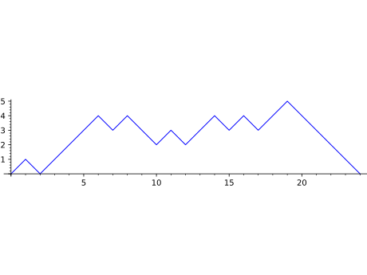

Dyck words¶
A class of an object enumerated by the
Catalan numbers,
see [Sta-EC2], [StaCat98] for details.
AUTHORS:
Mike Hansen
Dan Drake (2008-05-30): DyckWordBacktracker support
Florent Hivert (2009-02-01): Bijections with NonDecreasingParkingFunctions
Christian Stump (2011-12): added combinatorial maps and statistics
Mike Zabrocki:
(2012-10): added pretty print, characteristic function, more functions
(2013-01): added inverse of area/dinv, bounce/area map
Jean–Baptiste Priez, Travis Scrimshaw (2013-05-17): Added ASCII art
Travis Scrimshaw (2013-07-09): Removed
CombinatorialClassand added global options.
REFERENCES:
Richard P. Stanley. Enumerative Combinatorics, Volume 2. Cambridge University Press, 2001.
Richard Stanley. Exercises on Catalan and Related Numbers excerpted from Enumerative Combinatorics, vol. 2 (CUP 1999), version of 23 June 1998. http://www-math.mit.edu/~rstan/ec/catalan.pdf
James Haglund. The \(q,t\) – Catalan Numbers and the Space of Diagonal Harmonics: With an Appendix on the Combinatorics of Macdonald Polynomials. University of Pennsylvania, Philadelphia – AMS, 2008, 167 pp.
J. Bandlow, K. Killpatrick – An area-to_inv bijection between Dyck paths and 312-avoiding permutations, Electronic Journal of Combinatorics, Volume 8, Issue 1 (2001).
S. Elizalde, I. Pak. Bijections for refined restricted permutations*. JCTA 105(2) 2004.
A. Claesson, S. Kitaev. Classification of bijections between `321`- and `132`- avoiding permutations. Séminaire Lotharingien de Combinatoire 60 2008. arXiv 0805.1325.
D. Knuth. The Art of Computer Programming, Vol. III. Addison-Wesley. Reading, MA. 1973.
C. Krattenthaler – Permutations with restricted patterns and Dyck paths, Adv. Appl. Math. 27 (2001), 510–530.
A. Denise, R. Simion, Two combinatorial statistics on Dyck paths, Discrete Math 137 (1992), 155–176.
- class sage.combinat.dyck_word.CompleteDyckWords[source]¶
Bases:
DyckWordsAbstract base class for all complete Dyck words.
- Element[source]¶
alias of
DyckWord_complete
- from_Catalan_code(code)[source]¶
Return the Dyck word associated to the given Catalan code
code.A Catalan code of length \(n\) is a sequence \((a_1, a_2, \ldots, a_n)\) of \(n\) integers \(a_i\) such that:
\(0 \leq a_i \leq n-i\) for every \(i\);
if \(i < j\) and \(a_i > 0\) and \(a_j > 0\) and \(a_{i+1} = a_{i+2} = \cdots = a_{j-1} = 0\), then \(a_i - a_j < j-i\).
It turns out that the Catalan codes of length \(n\) are in bijection with Dyck words.
The Catalan code of a Dyck word is example (x) in Richard Stanley’s exercises on combinatorial interpretations for Catalan objects. The code in this example is the reverse of the description provided there. See [Sta-EC2] and [StaCat98].
EXAMPLES:
sage: DyckWords().from_Catalan_code([]) [] sage: DyckWords().from_Catalan_code([0]) [1, 0] sage: DyckWords().from_Catalan_code([0, 1]) [1, 1, 0, 0] sage: DyckWords().from_Catalan_code([0, 0]) [1, 0, 1, 0]
>>> from sage.all import * >>> DyckWords().from_Catalan_code([]) [] >>> DyckWords().from_Catalan_code([Integer(0)]) [1, 0] >>> DyckWords().from_Catalan_code([Integer(0), Integer(1)]) [1, 1, 0, 0] >>> DyckWords().from_Catalan_code([Integer(0), Integer(0)]) [1, 0, 1, 0]
- from_area_sequence(code)[source]¶
Return the Dyck word associated to the given area sequence
code.See
to_area_sequence()for a definition of the area sequence of a Dyck word.See also
INPUT:
code– list of integers satisfyingcode[0] == 0and0 <= code[i+1] <= code[i]+1
EXAMPLES:
sage: DyckWords().from_area_sequence([]) [] sage: DyckWords().from_area_sequence([0]) [1, 0] sage: DyckWords().from_area_sequence([0, 1]) [1, 1, 0, 0] sage: DyckWords().from_area_sequence([0, 0]) [1, 0, 1, 0]
>>> from sage.all import * >>> DyckWords().from_area_sequence([]) [] >>> DyckWords().from_area_sequence([Integer(0)]) [1, 0] >>> DyckWords().from_area_sequence([Integer(0), Integer(1)]) [1, 1, 0, 0] >>> DyckWords().from_area_sequence([Integer(0), Integer(0)]) [1, 0, 1, 0]
- from_non_decreasing_parking_function(pf)[source]¶
Bijection from
non-decreasing parking functions.See there the method
to_dyck_word()for more information.EXAMPLES:
sage: D = DyckWords() sage: D.from_non_decreasing_parking_function([]) [] sage: D.from_non_decreasing_parking_function([1]) [1, 0] sage: D.from_non_decreasing_parking_function([1,1]) [1, 1, 0, 0] sage: D.from_non_decreasing_parking_function([1,2]) [1, 0, 1, 0] sage: D.from_non_decreasing_parking_function([1,1,1]) [1, 1, 1, 0, 0, 0] sage: D.from_non_decreasing_parking_function([1,2,3]) [1, 0, 1, 0, 1, 0] sage: D.from_non_decreasing_parking_function([1,1,3,3,4,6,6]) [1, 1, 0, 0, 1, 1, 0, 1, 0, 0, 1, 1, 0, 0]
>>> from sage.all import * >>> D = DyckWords() >>> D.from_non_decreasing_parking_function([]) [] >>> D.from_non_decreasing_parking_function([Integer(1)]) [1, 0] >>> D.from_non_decreasing_parking_function([Integer(1),Integer(1)]) [1, 1, 0, 0] >>> D.from_non_decreasing_parking_function([Integer(1),Integer(2)]) [1, 0, 1, 0] >>> D.from_non_decreasing_parking_function([Integer(1),Integer(1),Integer(1)]) [1, 1, 1, 0, 0, 0] >>> D.from_non_decreasing_parking_function([Integer(1),Integer(2),Integer(3)]) [1, 0, 1, 0, 1, 0] >>> D.from_non_decreasing_parking_function([Integer(1),Integer(1),Integer(3),Integer(3),Integer(4),Integer(6),Integer(6)]) [1, 1, 0, 0, 1, 1, 0, 1, 0, 0, 1, 1, 0, 0]
- from_noncrossing_partition(ncp)[source]¶
Convert a noncrossing partition
ncpto a Dyck word.EXAMPLES:
sage: DyckWord(noncrossing_partition=[[1,2]]) # indirect doctest [1, 1, 0, 0] sage: DyckWord(noncrossing_partition=[[1],[2]]) [1, 0, 1, 0] sage: dws = DyckWords(5).list() sage: ncps = [x.to_noncrossing_partition() for x in dws] sage: dws2 = [DyckWord(noncrossing_partition=x) for x in ncps] sage: dws == dws2 True
>>> from sage.all import * >>> DyckWord(noncrossing_partition=[[Integer(1),Integer(2)]]) # indirect doctest [1, 1, 0, 0] >>> DyckWord(noncrossing_partition=[[Integer(1)],[Integer(2)]]) [1, 0, 1, 0] >>> dws = DyckWords(Integer(5)).list() >>> ncps = [x.to_noncrossing_partition() for x in dws] >>> dws2 = [DyckWord(noncrossing_partition=x) for x in ncps] >>> dws == dws2 True
- class sage.combinat.dyck_word.CompleteDyckWords_all[source]¶
Bases:
CompleteDyckWords,DyckWords_allAll complete Dyck words.
- class height_poset[source]¶
Bases:
UniqueRepresentation,ParentThe poset of complete Dyck words compared componentwise by
heights.This is,
Dis smaller than or equal toD'if it is weakly belowD'.This is implemented by comparison of area sequences.
- le(dw1, dw2)[source]¶
Compare two Dyck words of equal size, and return
Trueif all of the heights ofdw1are less than or equal to the respective heights ofdw2.See also
EXAMPLES:
sage: poset = DyckWords().height_poset() sage: poset.le(DyckWord([]), DyckWord([])) True sage: poset.le(DyckWord([1,0]), DyckWord([1,0])) True sage: poset.le(DyckWord([1,0,1,0]), DyckWord([1,1,0,0])) True sage: poset.le(DyckWord([1,1,0,0]), DyckWord([1,0,1,0])) False sage: [poset.le(dw1, dw2) ....: for dw1 in DyckWords(3) for dw2 in DyckWords(3)] [True, True, True, True, True, False, True, False, True, True, False, False, True, True, True, False, False, False, True, True, False, False, False, False, True]
>>> from sage.all import * >>> poset = DyckWords().height_poset() >>> poset.le(DyckWord([]), DyckWord([])) True >>> poset.le(DyckWord([Integer(1),Integer(0)]), DyckWord([Integer(1),Integer(0)])) True >>> poset.le(DyckWord([Integer(1),Integer(0),Integer(1),Integer(0)]), DyckWord([Integer(1),Integer(1),Integer(0),Integer(0)])) True >>> poset.le(DyckWord([Integer(1),Integer(1),Integer(0),Integer(0)]), DyckWord([Integer(1),Integer(0),Integer(1),Integer(0)])) False >>> [poset.le(dw1, dw2) ... for dw1 in DyckWords(Integer(3)) for dw2 in DyckWords(Integer(3))] [True, True, True, True, True, False, True, False, True, True, False, False, True, True, True, False, False, False, True, True, False, False, False, False, True]
- class sage.combinat.dyck_word.CompleteDyckWords_size(k)[source]¶
Bases:
CompleteDyckWords,DyckWords_sizeAll complete Dyck words of a given size.
- cardinality()[source]¶
Return the number of complete Dyck words of semilength \(n\), i.e. the \(n\)-th
Catalan number.EXAMPLES:
sage: DyckWords(4).cardinality() 14 sage: ns = list(range(9)) sage: dws = [DyckWords(n) for n in ns] sage: all(dw.cardinality() == len(dw.list()) for dw in dws) True
>>> from sage.all import * >>> DyckWords(Integer(4)).cardinality() 14 >>> ns = list(range(Integer(9))) >>> dws = [DyckWords(n) for n in ns] >>> all(dw.cardinality() == len(dw.list()) for dw in dws) True
- random_element()[source]¶
Return a random complete Dyck word of semilength \(n\).
The algorithm is based on a classical combinatorial fact. One chooses at random a word with \(n\) 0s and \(n+1\) 1s. One then considers every 1 as an ascending step and every 0 as a descending step, and one finds the lowest point of the path (with respect to a slightly tilted slope). One then cuts the path at this point and builds a Dyck word by exchanging the two parts of the word and removing the initial step.
Todo
extend this to m-Dyck words
EXAMPLES:
sage: dw = DyckWords(8) sage: dw.random_element() # random [1, 1, 1, 1, 1, 0, 0, 0, 0, 0, 1, 0, 1, 0, 1, 0] sage: D = DyckWords(8) sage: D.random_element() in D True
>>> from sage.all import * >>> dw = DyckWords(Integer(8)) >>> dw.random_element() # random [1, 1, 1, 1, 1, 0, 0, 0, 0, 0, 1, 0, 1, 0, 1, 0] >>> D = DyckWords(Integer(8)) >>> D.random_element() in D True
- class sage.combinat.dyck_word.DyckWord(parent, l, latex_options={})[source]¶
Bases:
CombinatorialElementA Dyck word.
A Dyck word is a sequence of open and close symbols such that every close symbol has a corresponding open symbol preceding it. That is to say, a Dyck word of length \(n\) is a list with \(k\) entries 1 and \(n - k\) entries 0 such that the first \(i\) entries always have at least as many 1s among them as 0s. (Here, the 1 serves as the open symbol and the 0 as the close symbol.) Alternatively, the alphabet 1 and 0 can be replaced by other characters such as ‘(’ and ‘)’.
A Dyck word is complete if every open symbol moreover has a corresponding close symbol.
A Dyck word may also be specified by either a noncrossing partition or by an area sequence or the sequence of heights.
A Dyck word may also be thought of as a lattice path in the \(\ZZ^2\) grid, starting at the origin \((0,0)\), and with steps in the North \(N = (0,1)\) and east \(E = (1,0)\) directions such that it does not pass below the \(x = y\) diagonal. The diagonal is referred to as the “main diagonal” in the documentation. A North step is represented by a 1 in the list and an East step is represented by a 0.
Equivalently, the path may be represented with steps in the \(NE = (1,1)\) and the \(SE = (1,-1)\) direction such that it does not pass below the horizontal axis.
 A path representing a Dyck word (either using \(N\) and \(E\) steps, or using \(NE\) and \(SE\) steps) is called a Dyck path.
EXAMPLES:
sage: dw = DyckWord([1, 0, 1, 0]); dw [1, 0, 1, 0] sage: print(dw) ()() sage: dw.height() 1 sage: dw.to_noncrossing_partition() {{1}, {2}}
>>> from sage.all import * >>> dw = DyckWord([Integer(1), Integer(0), Integer(1), Integer(0)]); dw [1, 0, 1, 0] >>> print(dw) ()() >>> dw.height() 1 >>> dw.to_noncrossing_partition() {{1}, {2}}
sage: DyckWord('()()') [1, 0, 1, 0] sage: DyckWord('(())') [1, 1, 0, 0] sage: DyckWord('((') [1, 1] sage: DyckWord('') []
>>> from sage.all import * >>> DyckWord('()()') [1, 0, 1, 0] >>> DyckWord('(())') [1, 1, 0, 0] >>> DyckWord('((') [1, 1] >>> DyckWord('') []
sage: DyckWord(noncrossing_partition=[[1],[2]]) [1, 0, 1, 0] sage: DyckWord(noncrossing_partition=[[1,2]]) [1, 1, 0, 0] sage: DyckWord(noncrossing_partition=[]) []
>>> from sage.all import * >>> DyckWord(noncrossing_partition=[[Integer(1)],[Integer(2)]]) [1, 0, 1, 0] >>> DyckWord(noncrossing_partition=[[Integer(1),Integer(2)]]) [1, 1, 0, 0] >>> DyckWord(noncrossing_partition=[]) []
sage: DyckWord(area_sequence=[0,0]) [1, 0, 1, 0] sage: DyckWord(area_sequence=[0,1]) [1, 1, 0, 0] sage: DyckWord(area_sequence=[0,1,2,2,0,1,1,2]) [1, 1, 1, 0, 1, 0, 0, 0, 1, 1, 0, 1, 1, 0, 0, 0] sage: DyckWord(area_sequence=[]) []
>>> from sage.all import * >>> DyckWord(area_sequence=[Integer(0),Integer(0)]) [1, 0, 1, 0] >>> DyckWord(area_sequence=[Integer(0),Integer(1)]) [1, 1, 0, 0] >>> DyckWord(area_sequence=[Integer(0),Integer(1),Integer(2),Integer(2),Integer(0),Integer(1),Integer(1),Integer(2)]) [1, 1, 1, 0, 1, 0, 0, 0, 1, 1, 0, 1, 1, 0, 0, 0] >>> DyckWord(area_sequence=[]) []
sage: DyckWord(heights_sequence=(0,1,0,1,0)) [1, 0, 1, 0] sage: DyckWord(heights_sequence=(0,1,2,1,0)) [1, 1, 0, 0] sage: DyckWord(heights_sequence=(0,)) []
>>> from sage.all import * >>> DyckWord(heights_sequence=(Integer(0),Integer(1),Integer(0),Integer(1),Integer(0))) [1, 0, 1, 0] >>> DyckWord(heights_sequence=(Integer(0),Integer(1),Integer(2),Integer(1),Integer(0))) [1, 1, 0, 0] >>> DyckWord(heights_sequence=(Integer(0),)) []
sage: print(DyckWord([1,0,1,1,0,0]).to_path_string()) /\ /\/ \ sage: DyckWord([1,0,1,1,0,0]).pretty_print() ___ | x _| . | . .
>>> from sage.all import * >>> print(DyckWord([Integer(1),Integer(0),Integer(1),Integer(1),Integer(0),Integer(0)]).to_path_string()) /\ /\/ \ >>> DyckWord([Integer(1),Integer(0),Integer(1),Integer(1),Integer(0),Integer(0)]).pretty_print() ___ | x _| . | . .
- ascent_prime_decomposition()[source]¶
Decompose this Dyck word into a sequence of ascents and prime Dyck paths.
A Dyck word is prime if it is complete and has precisely one return - the final step. In particular, the empty Dyck path is not prime. Thus, the factorization is unique.
This decomposition yields a sequence of odd length: the words with even indices consist of up steps only, the words with odd indices are prime Dyck paths. The concatenation of the result is the original word.
EXAMPLES:
sage: D = DyckWord([1,1,1,0,1,0,1,1,1,1,0,1]) sage: D.ascent_prime_decomposition() [[1, 1], [1, 0], [], [1, 0], [1, 1, 1], [1, 0], [1]] sage: DyckWord([]).ascent_prime_decomposition() [[]] sage: DyckWord([1,1]).ascent_prime_decomposition() [[1, 1]] sage: DyckWord([1,0,1,0]).ascent_prime_decomposition() [[], [1, 0], [], [1, 0], []]
>>> from sage.all import * >>> D = DyckWord([Integer(1),Integer(1),Integer(1),Integer(0),Integer(1),Integer(0),Integer(1),Integer(1),Integer(1),Integer(1),Integer(0),Integer(1)]) >>> D.ascent_prime_decomposition() [[1, 1], [1, 0], [], [1, 0], [1, 1, 1], [1, 0], [1]] >>> DyckWord([]).ascent_prime_decomposition() [[]] >>> DyckWord([Integer(1),Integer(1)]).ascent_prime_decomposition() [[1, 1]] >>> DyckWord([Integer(1),Integer(0),Integer(1),Integer(0)]).ascent_prime_decomposition() [[], [1, 0], [], [1, 0], []]
- associated_parenthesis(pos)[source]¶
Report the position for the parenthesis in
selfthat matches the one at positionpos.The positions in
selfare counted from \(0\).INPUT:
pos– the index of the parenthesis in the list
OUTPUT:
Integer representing the index of the matching parenthesis. If no parenthesis matches, return
None.
EXAMPLES:
sage: DyckWord([1, 0]).associated_parenthesis(0) 1 sage: DyckWord([1, 0, 1, 0]).associated_parenthesis(0) 1 sage: DyckWord([1, 0, 1, 0]).associated_parenthesis(1) 0 sage: DyckWord([1, 0, 1, 0]).associated_parenthesis(2) 3 sage: DyckWord([1, 0, 1, 0]).associated_parenthesis(3) 2 sage: DyckWord([1, 1, 0, 0]).associated_parenthesis(0) 3 sage: DyckWord([1, 1, 0, 0]).associated_parenthesis(2) 1 sage: DyckWord([1, 1, 0]).associated_parenthesis(1) 2 sage: DyckWord([1, 1]).associated_parenthesis(0)
>>> from sage.all import * >>> DyckWord([Integer(1), Integer(0)]).associated_parenthesis(Integer(0)) 1 >>> DyckWord([Integer(1), Integer(0), Integer(1), Integer(0)]).associated_parenthesis(Integer(0)) 1 >>> DyckWord([Integer(1), Integer(0), Integer(1), Integer(0)]).associated_parenthesis(Integer(1)) 0 >>> DyckWord([Integer(1), Integer(0), Integer(1), Integer(0)]).associated_parenthesis(Integer(2)) 3 >>> DyckWord([Integer(1), Integer(0), Integer(1), Integer(0)]).associated_parenthesis(Integer(3)) 2 >>> DyckWord([Integer(1), Integer(1), Integer(0), Integer(0)]).associated_parenthesis(Integer(0)) 3 >>> DyckWord([Integer(1), Integer(1), Integer(0), Integer(0)]).associated_parenthesis(Integer(2)) 1 >>> DyckWord([Integer(1), Integer(1), Integer(0)]).associated_parenthesis(Integer(1)) 2 >>> DyckWord([Integer(1), Integer(1)]).associated_parenthesis(Integer(0))
- catalan_factorization()[source]¶
Decompose this Dyck word into a sequence of complete Dyck words.
Each element of the list returned is a (possibly empty) complete Dyck word. The original word is obtained by placing an up step between each of these complete Dyck words. Thus, the number of words returned is one more than the final height.
See Section 1.2 of [CC1982] or Lemma 9.1.1 of [Lot2005].
EXAMPLES:
sage: D = DyckWord([1,1,1,0,1,0,1,1,1,1,0,1]) sage: D.catalan_factorization() [[], [], [1, 0, 1, 0], [], [], [1, 0], []] sage: DyckWord([]).catalan_factorization() [[]] sage: DyckWord([1,1]).catalan_factorization() [[], [], []] sage: DyckWord([1,0,1,0]).catalan_factorization() [[1, 0, 1, 0]]
>>> from sage.all import * >>> D = DyckWord([Integer(1),Integer(1),Integer(1),Integer(0),Integer(1),Integer(0),Integer(1),Integer(1),Integer(1),Integer(1),Integer(0),Integer(1)]) >>> D.catalan_factorization() [[], [], [1, 0, 1, 0], [], [], [1, 0], []] >>> DyckWord([]).catalan_factorization() [[]] >>> DyckWord([Integer(1),Integer(1)]).catalan_factorization() [[], [], []] >>> DyckWord([Integer(1),Integer(0),Integer(1),Integer(0)]).catalan_factorization() [[1, 0, 1, 0]]
- height()[source]¶
Return the height of
self.We view the Dyck word as a Dyck path from \((0, 0)\) to \((2n, 0)\) in the first quadrant by letting
1’s represent steps in the direction \((1, 1)\) and0’s represent steps in the direction \((1, -1)\).The height is the maximum \(y\)-coordinate reached.
See also
EXAMPLES:
sage: DyckWord([]).height() 0 sage: DyckWord([1,0]).height() 1 sage: DyckWord([1, 1, 0, 0]).height() 2 sage: DyckWord([1, 1, 0, 1, 0]).height() 2 sage: DyckWord([1, 1, 0, 0, 1, 0]).height() 2 sage: DyckWord([1, 0, 1, 0]).height() 1 sage: DyckWord([1, 1, 0, 0, 1, 1, 1, 0, 0, 0]).height() 3
>>> from sage.all import * >>> DyckWord([]).height() 0 >>> DyckWord([Integer(1),Integer(0)]).height() 1 >>> DyckWord([Integer(1), Integer(1), Integer(0), Integer(0)]).height() 2 >>> DyckWord([Integer(1), Integer(1), Integer(0), Integer(1), Integer(0)]).height() 2 >>> DyckWord([Integer(1), Integer(1), Integer(0), Integer(0), Integer(1), Integer(0)]).height() 2 >>> DyckWord([Integer(1), Integer(0), Integer(1), Integer(0)]).height() 1 >>> DyckWord([Integer(1), Integer(1), Integer(0), Integer(0), Integer(1), Integer(1), Integer(1), Integer(0), Integer(0), Integer(0)]).height() 3
- heights()[source]¶
Return the heights of
self.We view the Dyck word as a Dyck path from \((0,0)\) to \((2n,0)\) in the first quadrant by letting
1’s represent steps in the direction \((1,1)\) and0’s represent steps in the direction \((1,-1)\).The heights is the sequence of the \(y\)-coordinates of all \(2n+1\) lattice points along the path.
See also
EXAMPLES:
sage: DyckWord([]).heights() (0,) sage: DyckWord([1,0]).heights() (0, 1, 0) sage: DyckWord([1, 1, 0, 0]).heights() (0, 1, 2, 1, 0) sage: DyckWord([1, 1, 0, 1, 0]).heights() (0, 1, 2, 1, 2, 1) sage: DyckWord([1, 1, 0, 0, 1, 0]).heights() (0, 1, 2, 1, 0, 1, 0) sage: DyckWord([1, 0, 1, 0]).heights() (0, 1, 0, 1, 0) sage: DyckWord([1, 1, 0, 0, 1, 1, 1, 0, 0, 0]).heights() (0, 1, 2, 1, 0, 1, 2, 3, 2, 1, 0)
>>> from sage.all import * >>> DyckWord([]).heights() (0,) >>> DyckWord([Integer(1),Integer(0)]).heights() (0, 1, 0) >>> DyckWord([Integer(1), Integer(1), Integer(0), Integer(0)]).heights() (0, 1, 2, 1, 0) >>> DyckWord([Integer(1), Integer(1), Integer(0), Integer(1), Integer(0)]).heights() (0, 1, 2, 1, 2, 1) >>> DyckWord([Integer(1), Integer(1), Integer(0), Integer(0), Integer(1), Integer(0)]).heights() (0, 1, 2, 1, 0, 1, 0) >>> DyckWord([Integer(1), Integer(0), Integer(1), Integer(0)]).heights() (0, 1, 0, 1, 0) >>> DyckWord([Integer(1), Integer(1), Integer(0), Integer(0), Integer(1), Integer(1), Integer(1), Integer(0), Integer(0), Integer(0)]).heights() (0, 1, 2, 1, 0, 1, 2, 3, 2, 1, 0)
- is_complete()[source]¶
Return
Trueifselfis complete.A Dyck word \(d\) is complete if \(d\) contains as many closers as openers.
EXAMPLES:
sage: DyckWord([1, 0, 1, 0]).is_complete() True sage: DyckWord([1, 0, 1, 1, 0]).is_complete() False
>>> from sage.all import * >>> DyckWord([Integer(1), Integer(0), Integer(1), Integer(0)]).is_complete() True >>> DyckWord([Integer(1), Integer(0), Integer(1), Integer(1), Integer(0)]).is_complete() False
- latex_options()[source]¶
Return the latex options for use in the
_latex_function as a dictionary.The default values are set using the options.
tikz_scale– (default: 1) scale for use with the tikz packagediagonal– boolean (default:False); value to draw the diagonal or notline width– (default:2*tikz_scale) value representing the line widthcolor– (default: black) the line colorbounce path– boolean (default:False); value to indicate if the bounce path should be drawnpeaks– boolean (default:False); value to indicate if the peaks should be displayedvalleys– boolean (default:False); value to indicate if the valleys should be displayed
EXAMPLES:
sage: D = DyckWord([1,0,1,0,1,0]) sage: D.latex_options() {'bounce path': False, 'color': black, 'diagonal': False, 'line width': 2, 'peaks': False, 'tikz_scale': 1, 'valleys': False}
>>> from sage.all import * >>> D = DyckWord([Integer(1),Integer(0),Integer(1),Integer(0),Integer(1),Integer(0)]) >>> D.latex_options() {'bounce path': False, 'color': black, 'diagonal': False, 'line width': 2, 'peaks': False, 'tikz_scale': 1, 'valleys': False}
Todo
This should probably be merged into DyckWord.options.
- length()[source]¶
Return the length of
self.EXAMPLES:
sage: DyckWord([1, 0, 1, 0]).length() 4 sage: DyckWord([1, 0, 1, 1, 0]).length() 5
>>> from sage.all import * >>> DyckWord([Integer(1), Integer(0), Integer(1), Integer(0)]).length() 4 >>> DyckWord([Integer(1), Integer(0), Integer(1), Integer(1), Integer(0)]).length() 5
- number_of_close_symbols()[source]¶
Return the number of close symbols in
self.EXAMPLES:
sage: DyckWord([1, 0, 1, 0]).number_of_close_symbols() 2 sage: DyckWord([1, 0, 1, 1, 0]).number_of_close_symbols() 2
>>> from sage.all import * >>> DyckWord([Integer(1), Integer(0), Integer(1), Integer(0)]).number_of_close_symbols() 2 >>> DyckWord([Integer(1), Integer(0), Integer(1), Integer(1), Integer(0)]).number_of_close_symbols() 2
- number_of_double_rises()[source]¶
Return a the number of positions in
selfwhere there are two consecutive \(1\)’s.EXAMPLES:
sage: DyckWord([1, 0, 1, 1, 0, 1, 1, 0, 0, 1, 0, 0, 1, 0]).number_of_double_rises() 2 sage: DyckWord([1, 1, 0, 0]).number_of_double_rises() 1 sage: DyckWord([1, 0, 1, 0]).number_of_double_rises() 0
>>> from sage.all import * >>> DyckWord([Integer(1), Integer(0), Integer(1), Integer(1), Integer(0), Integer(1), Integer(1), Integer(0), Integer(0), Integer(1), Integer(0), Integer(0), Integer(1), Integer(0)]).number_of_double_rises() 2 >>> DyckWord([Integer(1), Integer(1), Integer(0), Integer(0)]).number_of_double_rises() 1 >>> DyckWord([Integer(1), Integer(0), Integer(1), Integer(0)]).number_of_double_rises() 0
- number_of_initial_rises()[source]¶
Return the length of the initial run of
self.OUTPUT: nonnegative integer indicating the length of the initial rise
EXAMPLES:
sage: DyckWord([1, 0, 1, 0]).number_of_initial_rises() 1 sage: DyckWord([1, 1, 0, 0]).number_of_initial_rises() 2 sage: DyckWord([1, 1, 0, 0, 1, 0]).number_of_initial_rises() 2 sage: DyckWord([1, 0, 1, 1, 0, 0]).number_of_initial_rises() 1
>>> from sage.all import * >>> DyckWord([Integer(1), Integer(0), Integer(1), Integer(0)]).number_of_initial_rises() 1 >>> DyckWord([Integer(1), Integer(1), Integer(0), Integer(0)]).number_of_initial_rises() 2 >>> DyckWord([Integer(1), Integer(1), Integer(0), Integer(0), Integer(1), Integer(0)]).number_of_initial_rises() 2 >>> DyckWord([Integer(1), Integer(0), Integer(1), Integer(1), Integer(0), Integer(0)]).number_of_initial_rises() 1
- number_of_open_symbols()[source]¶
Return the number of open symbols in
self.EXAMPLES:
sage: DyckWord([1, 0, 1, 0]).number_of_open_symbols() 2 sage: DyckWord([1, 0, 1, 1, 0]).number_of_open_symbols() 3
>>> from sage.all import * >>> DyckWord([Integer(1), Integer(0), Integer(1), Integer(0)]).number_of_open_symbols() 2 >>> DyckWord([Integer(1), Integer(0), Integer(1), Integer(1), Integer(0)]).number_of_open_symbols() 3
- number_of_peaks()[source]¶
Return the number of peaks of the Dyck path associated to
self.See also
EXAMPLES:
sage: DyckWord([1, 0, 1, 0]).number_of_peaks() 2 sage: DyckWord([1, 1, 0, 0]).number_of_peaks() 1 sage: DyckWord([1,1,0,1,0,1,0,0]).number_of_peaks() 3 sage: DyckWord([]).number_of_peaks() 0
>>> from sage.all import * >>> DyckWord([Integer(1), Integer(0), Integer(1), Integer(0)]).number_of_peaks() 2 >>> DyckWord([Integer(1), Integer(1), Integer(0), Integer(0)]).number_of_peaks() 1 >>> DyckWord([Integer(1),Integer(1),Integer(0),Integer(1),Integer(0),Integer(1),Integer(0),Integer(0)]).number_of_peaks() 3 >>> DyckWord([]).number_of_peaks() 0
- number_of_touch_points()[source]¶
Return the number of touches of
selfat the main diagonal.OUTPUT: nonnegative integer
EXAMPLES:
sage: DyckWord([1, 0, 1, 0]).number_of_touch_points() 2 sage: DyckWord([1, 1, 0, 0]).number_of_touch_points() 1 sage: DyckWord([1, 1, 0, 0, 1, 0]).number_of_touch_points() 2 sage: DyckWord([1, 0, 1, 1, 0, 0]).number_of_touch_points() 2
>>> from sage.all import * >>> DyckWord([Integer(1), Integer(0), Integer(1), Integer(0)]).number_of_touch_points() 2 >>> DyckWord([Integer(1), Integer(1), Integer(0), Integer(0)]).number_of_touch_points() 1 >>> DyckWord([Integer(1), Integer(1), Integer(0), Integer(0), Integer(1), Integer(0)]).number_of_touch_points() 2 >>> DyckWord([Integer(1), Integer(0), Integer(1), Integer(1), Integer(0), Integer(0)]).number_of_touch_points() 2
- number_of_valleys()[source]¶
Return the number of valleys of
self.See also
EXAMPLES:
sage: DyckWord([1, 0, 1, 0]).number_of_valleys() 1 sage: DyckWord([1, 1, 0, 0]).number_of_valleys() 0 sage: DyckWord([1, 1, 0, 0, 1, 0]).number_of_valleys() 1 sage: DyckWord([1, 0, 1, 1, 0, 0]).number_of_valleys() 1
>>> from sage.all import * >>> DyckWord([Integer(1), Integer(0), Integer(1), Integer(0)]).number_of_valleys() 1 >>> DyckWord([Integer(1), Integer(1), Integer(0), Integer(0)]).number_of_valleys() 0 >>> DyckWord([Integer(1), Integer(1), Integer(0), Integer(0), Integer(1), Integer(0)]).number_of_valleys() 1 >>> DyckWord([Integer(1), Integer(0), Integer(1), Integer(1), Integer(0), Integer(0)]).number_of_valleys() 1
- peaks()[source]¶
Return a list of the positions of the peaks of a Dyck word.
A peak is \(1\) followed by a \(0\). Note that this does not agree with the definition given in [Hag2008].
See also
EXAMPLES:
sage: DyckWord([1, 0, 1, 0]).peaks() [0, 2] sage: DyckWord([1, 1, 0, 0]).peaks() [1] sage: DyckWord([1,1,0,1,0,1,0,0]).peaks() # Haglund's def gives 2 [1, 3, 5]
>>> from sage.all import * >>> DyckWord([Integer(1), Integer(0), Integer(1), Integer(0)]).peaks() [0, 2] >>> DyckWord([Integer(1), Integer(1), Integer(0), Integer(0)]).peaks() [1] >>> DyckWord([Integer(1),Integer(1),Integer(0),Integer(1),Integer(0),Integer(1),Integer(0),Integer(0)]).peaks() # Haglund's def gives 2 [1, 3, 5]
- plot(**kwds)[source]¶
Plot a Dyck word as a continuous path.
EXAMPLES:
sage: w = DyckWords(100).random_element() sage: w.plot() # needs sage.plot Graphics object consisting of 1 graphics primitive
>>> from sage.all import * >>> w = DyckWords(Integer(100)).random_element() >>> w.plot() # needs sage.plot Graphics object consisting of 1 graphics primitive
- position_of_first_return()[source]¶
Return the number of vertical steps before the Dyck path returns to the main diagonal.
EXAMPLES:
sage: DyckWord([1, 0, 1, 1, 0, 1, 1, 0, 0, 1, 0, 0, 1, 0]).position_of_first_return() 1 sage: DyckWord([1, 1, 1, 0, 1, 1, 0, 0, 1, 0, 0, 1, 0, 0]).position_of_first_return() 7 sage: DyckWord([1, 1, 0, 0]).position_of_first_return() 2 sage: DyckWord([1, 0, 1, 0]).position_of_first_return() 1 sage: DyckWord([]).position_of_first_return() 0
>>> from sage.all import * >>> DyckWord([Integer(1), Integer(0), Integer(1), Integer(1), Integer(0), Integer(1), Integer(1), Integer(0), Integer(0), Integer(1), Integer(0), Integer(0), Integer(1), Integer(0)]).position_of_first_return() 1 >>> DyckWord([Integer(1), Integer(1), Integer(1), Integer(0), Integer(1), Integer(1), Integer(0), Integer(0), Integer(1), Integer(0), Integer(0), Integer(1), Integer(0), Integer(0)]).position_of_first_return() 7 >>> DyckWord([Integer(1), Integer(1), Integer(0), Integer(0)]).position_of_first_return() 2 >>> DyckWord([Integer(1), Integer(0), Integer(1), Integer(0)]).position_of_first_return() 1 >>> DyckWord([]).position_of_first_return() 0
- positions_of_double_rises()[source]¶
Return a list of positions in
selfwhere there are two consecutive \(1\)’s.EXAMPLES:
sage: DyckWord([1, 0, 1, 1, 0, 1, 1, 0, 0, 1, 0, 0, 1, 0]).positions_of_double_rises() [2, 5] sage: DyckWord([1, 1, 0, 0]).positions_of_double_rises() [0] sage: DyckWord([1, 0, 1, 0]).positions_of_double_rises() []
>>> from sage.all import * >>> DyckWord([Integer(1), Integer(0), Integer(1), Integer(1), Integer(0), Integer(1), Integer(1), Integer(0), Integer(0), Integer(1), Integer(0), Integer(0), Integer(1), Integer(0)]).positions_of_double_rises() [2, 5] >>> DyckWord([Integer(1), Integer(1), Integer(0), Integer(0)]).positions_of_double_rises() [0] >>> DyckWord([Integer(1), Integer(0), Integer(1), Integer(0)]).positions_of_double_rises() []
- pp(type=None, labelling=None, underpath=True)[source]¶
Display a DyckWord as a lattice path in the \(\ZZ^2\) grid.
If the
typeis “N-E”, then a cell below the diagonal is indicated by a period, whereas a cell below the path but above the diagonal is indicated by an x. If a list of labels is included, they are displayed along the vertical edges of the Dyck path.If the
typeis “NE-SE”, then the path is simply printed as up steps and down steps.INPUT:
type– (default:None) can either be:Noneto use the option default“N-E” to show
selfas a path of north and east steps, or“NE-SE” to show
selfas a path of north-east and south-east steps.
labelling– (if type is “N-E”) a list of labels assigned to the up steps inselfunderpath– (if type is “N-E”, default:True) ifTrue, the labelling is shown under the path; otherwise, it is shown to the right of the path
EXAMPLES:
sage: for D in DyckWords(3): D.pretty_print() _ _| _| . | . . ___ | x _| . | . . _ ___| | x . | . . ___ _| x | x . | . . _____ | x x | x . | . .
>>> from sage.all import * >>> for D in DyckWords(Integer(3)): D.pretty_print() _ _| _| . | . . ___ | x _| . | . . _ ___| | x . | . . ___ _| x | x . | . . _____ | x x | x . | . .
sage: for D in DyckWords(3): D.pretty_print(type="NE-SE") /\/\/\ /\ /\/ \ /\ / \/\ /\/\ / \ /\ / \ / \
>>> from sage.all import * >>> for D in DyckWords(Integer(3)): D.pretty_print(type="NE-SE") /\/\/\ /\ /\/ \ /\ / \/\ /\/\ / \ /\ / \ / \
sage: D = DyckWord([1,1,1,0,1,0,0,1,1]) sage: D.pretty_print() | x x ___| x . _| x x . . | x x . . . | x . . . . | . . . . . sage: D = DyckWord([1,1,1,0,1,0,0,1,1,0]) sage: D.pretty_print() _ | x x ___| x . _| x x . . | x x . . . | x . . . . | . . . . . sage: D = DyckWord([1,1,1,0,1,0,0,1,1,0,0]) sage: D.pretty_print() ___ | x x ___| x . _| x x . . | x x . . . | x . . . . | . . . . .
>>> from sage.all import * >>> D = DyckWord([Integer(1),Integer(1),Integer(1),Integer(0),Integer(1),Integer(0),Integer(0),Integer(1),Integer(1)]) >>> D.pretty_print() | x x ___| x . _| x x . . | x x . . . | x . . . . | . . . . . >>> D = DyckWord([Integer(1),Integer(1),Integer(1),Integer(0),Integer(1),Integer(0),Integer(0),Integer(1),Integer(1),Integer(0)]) >>> D.pretty_print() _ | x x ___| x . _| x x . . | x x . . . | x . . . . | . . . . . >>> D = DyckWord([Integer(1),Integer(1),Integer(1),Integer(0),Integer(1),Integer(0),Integer(0),Integer(1),Integer(1),Integer(0),Integer(0)]) >>> D.pretty_print() ___ | x x ___| x . _| x x . . | x x . . . | x . . . . | . . . . .
sage: DyckWord(area_sequence=[0,1,0]).pretty_print(labelling=[1,3,2]) _ ___|2 |3x . |1 . . sage: DyckWord(area_sequence=[0,1,0]).pretty_print(labelling=[1,3,2],underpath=False) _ ___| 2 | x . 3 | . . 1
>>> from sage.all import * >>> DyckWord(area_sequence=[Integer(0),Integer(1),Integer(0)]).pretty_print(labelling=[Integer(1),Integer(3),Integer(2)]) _ ___|2 |3x . |1 . . >>> DyckWord(area_sequence=[Integer(0),Integer(1),Integer(0)]).pretty_print(labelling=[Integer(1),Integer(3),Integer(2)],underpath=False) _ ___| 2 | x . 3 | . . 1
sage: DyckWord(area_sequence=[0,1,1,2,3,2,3,3,2,0,1,1,2,3,4,2,3]).pretty_print() _______ | x x x _____| x x . | x x x x . . | x x x . . . | x x . . . . _| x . . . . . | x . . . . . . _____| . . . . . . . ___| x x . . . . . . . . _| x x x . . . . . . . . . | x x x . . . . . . . . . . ___| x x . . . . . . . . . . . | x x x . . . . . . . . . . . . | x x . . . . . . . . . . . . . _| x . . . . . . . . . . . . . . | x . . . . . . . . . . . . . . . | . . . . . . . . . . . . . . . . sage: DyckWord(area_sequence=[0,1,1,2,3,2,3,3,2,0,1,1,2,3,4,2,3]).pretty_print(labelling=list(range(17)),underpath=False) _______ | x x x 16 _____| x x . 15 | x x x x . . 14 | x x x . . . 13 | x x . . . . 12 _| x . . . . . 11 | x . . . . . . 10 _____| . . . . . . . 9 ___| x x . . . . . . . . 8 _| x x x . . . . . . . . . 7 | x x x . . . . . . . . . . 6 ___| x x . . . . . . . . . . . 5 | x x x . . . . . . . . . . . . 4 | x x . . . . . . . . . . . . . 3 _| x . . . . . . . . . . . . . . 2 | x . . . . . . . . . . . . . . . 1 | . . . . . . . . . . . . . . . . 0
>>> from sage.all import * >>> DyckWord(area_sequence=[Integer(0),Integer(1),Integer(1),Integer(2),Integer(3),Integer(2),Integer(3),Integer(3),Integer(2),Integer(0),Integer(1),Integer(1),Integer(2),Integer(3),Integer(4),Integer(2),Integer(3)]).pretty_print() _______ | x x x _____| x x . | x x x x . . | x x x . . . | x x . . . . _| x . . . . . | x . . . . . . _____| . . . . . . . ___| x x . . . . . . . . _| x x x . . . . . . . . . | x x x . . . . . . . . . . ___| x x . . . . . . . . . . . | x x x . . . . . . . . . . . . | x x . . . . . . . . . . . . . _| x . . . . . . . . . . . . . . | x . . . . . . . . . . . . . . . | . . . . . . . . . . . . . . . . >>> DyckWord(area_sequence=[Integer(0),Integer(1),Integer(1),Integer(2),Integer(3),Integer(2),Integer(3),Integer(3),Integer(2),Integer(0),Integer(1),Integer(1),Integer(2),Integer(3),Integer(4),Integer(2),Integer(3)]).pretty_print(labelling=list(range(Integer(17))),underpath=False) _______ | x x x 16 _____| x x . 15 | x x x x . . 14 | x x x . . . 13 | x x . . . . 12 _| x . . . . . 11 | x . . . . . . 10 _____| . . . . . . . 9 ___| x x . . . . . . . . 8 _| x x x . . . . . . . . . 7 | x x x . . . . . . . . . . 6 ___| x x . . . . . . . . . . . 5 | x x x . . . . . . . . . . . . 4 | x x . . . . . . . . . . . . . 3 _| x . . . . . . . . . . . . . . 2 | x . . . . . . . . . . . . . . . 1 | . . . . . . . . . . . . . . . . 0
sage: DyckWord([]).pretty_print() .
>>> from sage.all import * >>> DyckWord([]).pretty_print() .
- pretty_print(type=None, labelling=None, underpath=True)[source]¶
Display a DyckWord as a lattice path in the \(\ZZ^2\) grid.
If the
typeis “N-E”, then a cell below the diagonal is indicated by a period, whereas a cell below the path but above the diagonal is indicated by an x. If a list of labels is included, they are displayed along the vertical edges of the Dyck path.If the
typeis “NE-SE”, then the path is simply printed as up steps and down steps.INPUT:
type– (default:None) can either be:Noneto use the option default“N-E” to show
selfas a path of north and east steps, or“NE-SE” to show
selfas a path of north-east and south-east steps.
labelling– (if type is “N-E”) a list of labels assigned to the up steps inselfunderpath– (if type is “N-E”, default:True) ifTrue, the labelling is shown under the path; otherwise, it is shown to the right of the path
EXAMPLES:
sage: for D in DyckWords(3): D.pretty_print() _ _| _| . | . . ___ | x _| . | . . _ ___| | x . | . . ___ _| x | x . | . . _____ | x x | x . | . .
>>> from sage.all import * >>> for D in DyckWords(Integer(3)): D.pretty_print() _ _| _| . | . . ___ | x _| . | . . _ ___| | x . | . . ___ _| x | x . | . . _____ | x x | x . | . .
sage: for D in DyckWords(3): D.pretty_print(type="NE-SE") /\/\/\ /\ /\/ \ /\ / \/\ /\/\ / \ /\ / \ / \
>>> from sage.all import * >>> for D in DyckWords(Integer(3)): D.pretty_print(type="NE-SE") /\/\/\ /\ /\/ \ /\ / \/\ /\/\ / \ /\ / \ / \
sage: D = DyckWord([1,1,1,0,1,0,0,1,1]) sage: D.pretty_print() | x x ___| x . _| x x . . | x x . . . | x . . . . | . . . . . sage: D = DyckWord([1,1,1,0,1,0,0,1,1,0]) sage: D.pretty_print() _ | x x ___| x . _| x x . . | x x . . . | x . . . . | . . . . . sage: D = DyckWord([1,1,1,0,1,0,0,1,1,0,0]) sage: D.pretty_print() ___ | x x ___| x . _| x x . . | x x . . . | x . . . . | . . . . .
>>> from sage.all import * >>> D = DyckWord([Integer(1),Integer(1),Integer(1),Integer(0),Integer(1),Integer(0),Integer(0),Integer(1),Integer(1)]) >>> D.pretty_print() | x x ___| x . _| x x . . | x x . . . | x . . . . | . . . . . >>> D = DyckWord([Integer(1),Integer(1),Integer(1),Integer(0),Integer(1),Integer(0),Integer(0),Integer(1),Integer(1),Integer(0)]) >>> D.pretty_print() _ | x x ___| x . _| x x . . | x x . . . | x . . . . | . . . . . >>> D = DyckWord([Integer(1),Integer(1),Integer(1),Integer(0),Integer(1),Integer(0),Integer(0),Integer(1),Integer(1),Integer(0),Integer(0)]) >>> D.pretty_print() ___ | x x ___| x . _| x x . . | x x . . . | x . . . . | . . . . .
sage: DyckWord(area_sequence=[0,1,0]).pretty_print(labelling=[1,3,2]) _ ___|2 |3x . |1 . . sage: DyckWord(area_sequence=[0,1,0]).pretty_print(labelling=[1,3,2],underpath=False) _ ___| 2 | x . 3 | . . 1
>>> from sage.all import * >>> DyckWord(area_sequence=[Integer(0),Integer(1),Integer(0)]).pretty_print(labelling=[Integer(1),Integer(3),Integer(2)]) _ ___|2 |3x . |1 . . >>> DyckWord(area_sequence=[Integer(0),Integer(1),Integer(0)]).pretty_print(labelling=[Integer(1),Integer(3),Integer(2)],underpath=False) _ ___| 2 | x . 3 | . . 1
sage: DyckWord(area_sequence=[0,1,1,2,3,2,3,3,2,0,1,1,2,3,4,2,3]).pretty_print() _______ | x x x _____| x x . | x x x x . . | x x x . . . | x x . . . . _| x . . . . . | x . . . . . . _____| . . . . . . . ___| x x . . . . . . . . _| x x x . . . . . . . . . | x x x . . . . . . . . . . ___| x x . . . . . . . . . . . | x x x . . . . . . . . . . . . | x x . . . . . . . . . . . . . _| x . . . . . . . . . . . . . . | x . . . . . . . . . . . . . . . | . . . . . . . . . . . . . . . . sage: DyckWord(area_sequence=[0,1,1,2,3,2,3,3,2,0,1,1,2,3,4,2,3]).pretty_print(labelling=list(range(17)),underpath=False) _______ | x x x 16 _____| x x . 15 | x x x x . . 14 | x x x . . . 13 | x x . . . . 12 _| x . . . . . 11 | x . . . . . . 10 _____| . . . . . . . 9 ___| x x . . . . . . . . 8 _| x x x . . . . . . . . . 7 | x x x . . . . . . . . . . 6 ___| x x . . . . . . . . . . . 5 | x x x . . . . . . . . . . . . 4 | x x . . . . . . . . . . . . . 3 _| x . . . . . . . . . . . . . . 2 | x . . . . . . . . . . . . . . . 1 | . . . . . . . . . . . . . . . . 0
>>> from sage.all import * >>> DyckWord(area_sequence=[Integer(0),Integer(1),Integer(1),Integer(2),Integer(3),Integer(2),Integer(3),Integer(3),Integer(2),Integer(0),Integer(1),Integer(1),Integer(2),Integer(3),Integer(4),Integer(2),Integer(3)]).pretty_print() _______ | x x x _____| x x . | x x x x . . | x x x . . . | x x . . . . _| x . . . . . | x . . . . . . _____| . . . . . . . ___| x x . . . . . . . . _| x x x . . . . . . . . . | x x x . . . . . . . . . . ___| x x . . . . . . . . . . . | x x x . . . . . . . . . . . . | x x . . . . . . . . . . . . . _| x . . . . . . . . . . . . . . | x . . . . . . . . . . . . . . . | . . . . . . . . . . . . . . . . >>> DyckWord(area_sequence=[Integer(0),Integer(1),Integer(1),Integer(2),Integer(3),Integer(2),Integer(3),Integer(3),Integer(2),Integer(0),Integer(1),Integer(1),Integer(2),Integer(3),Integer(4),Integer(2),Integer(3)]).pretty_print(labelling=list(range(Integer(17))),underpath=False) _______ | x x x 16 _____| x x . 15 | x x x x . . 14 | x x x . . . 13 | x x . . . . 12 _| x . . . . . 11 | x . . . . . . 10 _____| . . . . . . . 9 ___| x x . . . . . . . . 8 _| x x x . . . . . . . . . 7 | x x x . . . . . . . . . . 6 ___| x x . . . . . . . . . . . 5 | x x x . . . . . . . . . . . . 4 | x x . . . . . . . . . . . . . 3 _| x . . . . . . . . . . . . . . 2 | x . . . . . . . . . . . . . . . 1 | . . . . . . . . . . . . . . . . 0
sage: DyckWord([]).pretty_print() .
>>> from sage.all import * >>> DyckWord([]).pretty_print() .
- returns_to_zero()[source]¶
Return a list of positions where
selfhas height \(0\), excluding the position \(0\).EXAMPLES:
sage: DyckWord([]).returns_to_zero() [] sage: DyckWord([1, 0]).returns_to_zero() [2] sage: DyckWord([1, 0, 1, 0]).returns_to_zero() [2, 4] sage: DyckWord([1, 1, 0, 0]).returns_to_zero() [4]
>>> from sage.all import * >>> DyckWord([]).returns_to_zero() [] >>> DyckWord([Integer(1), Integer(0)]).returns_to_zero() [2] >>> DyckWord([Integer(1), Integer(0), Integer(1), Integer(0)]).returns_to_zero() [2, 4] >>> DyckWord([Integer(1), Integer(1), Integer(0), Integer(0)]).returns_to_zero() [4]
- rise_composition()[source]¶
The sequences of lengths of runs of \(1\)’s in
self. Also equal to the sequence of lengths of vertical segments in the Dyck path.EXAMPLES:
sage: DyckWord([1, 1, 0, 1, 1, 1, 0, 0, 0, 0, 1, 1, 0, 0]).pretty_print() ___ | x _______| . | x x x . . | x x . . . _| x . . . . | x . . . . . | . . . . . . sage: DyckWord([1, 1, 0, 1, 1, 1, 0, 0, 0, 0, 1, 1, 0, 0]).rise_composition() [2, 3, 2] sage: DyckWord([1,1,0,0]).rise_composition() [2] sage: DyckWord([1,0,1,0]).rise_composition() [1, 1]
>>> from sage.all import * >>> DyckWord([Integer(1), Integer(1), Integer(0), Integer(1), Integer(1), Integer(1), Integer(0), Integer(0), Integer(0), Integer(0), Integer(1), Integer(1), Integer(0), Integer(0)]).pretty_print() ___ | x _______| . | x x x . . | x x . . . _| x . . . . | x . . . . . | . . . . . . >>> DyckWord([Integer(1), Integer(1), Integer(0), Integer(1), Integer(1), Integer(1), Integer(0), Integer(0), Integer(0), Integer(0), Integer(1), Integer(1), Integer(0), Integer(0)]).rise_composition() [2, 3, 2] >>> DyckWord([Integer(1),Integer(1),Integer(0),Integer(0)]).rise_composition() [2] >>> DyckWord([Integer(1),Integer(0),Integer(1),Integer(0)]).rise_composition() [1, 1]
- set_latex_options(D)[source]¶
Set the latex options for use in the
_latex_function.The default values are set in the
__init__function.tikz_scale– (default: 1) scale for use with the tikz packagediagonal– boolean (default:False); value to draw the diagonal or notline width– (default:2*tikz_scale) value representing the line widthcolor– (default: black) the line colorbounce path– boolean (default:False); value to indicate if the bounce path should be drawnpeaks– boolean (default:False); value to indicate if the peaks should be displayedvalleys– boolean (default:False); value to indicate if the valleys should be displayed
INPUT:
D– dictionary with a list of latex parameters to change
EXAMPLES:
sage: D = DyckWord([1,0,1,0,1,0]) sage: D.set_latex_options({"tikz_scale":2}) sage: D.set_latex_options({"valleys":True, "color":"blue"})
>>> from sage.all import * >>> D = DyckWord([Integer(1),Integer(0),Integer(1),Integer(0),Integer(1),Integer(0)]) >>> D.set_latex_options({"tikz_scale":Integer(2)}) >>> D.set_latex_options({"valleys":True, "color":"blue"})
Todo
This should probably be merged into DyckWord.options.
- tamari_interval(other)[source]¶
Return the Tamari interval between
selfandotheras aTamariIntervalPoset.A “Tamari interval” means an interval in the Tamari order. The Tamari order on the set of Dyck words of size \(n\) is the partial order obtained from the Tamari order on the set of binary trees of size \(n\) (see
tamari_lequal()) by means of the Tamari bijection between Dyck words and binary trees (to_dyck_word_tamari()).INPUT:
other– a Dyck word greater or equal toselfin the Tamari order
EXAMPLES:
sage: # needs sage.graphs sage: dw = DyckWord([1, 1, 0, 1, 0, 0, 1, 0]) sage: ip = dw.tamari_interval(DyckWord([1, 1, 1, 0, 0, 1, 0, 0])); ip The Tamari interval of size 4 induced by relations [(2, 4), (3, 4), (3, 1), (2, 1)] sage: ip.lower_dyck_word() [1, 1, 0, 1, 0, 0, 1, 0] sage: ip.upper_dyck_word() [1, 1, 1, 0, 0, 1, 0, 0] sage: ip.interval_cardinality() 4 sage: ip.number_of_tamari_inversions() 2 sage: list(ip.dyck_words()) [[1, 1, 1, 0, 0, 1, 0, 0], [1, 1, 1, 0, 0, 0, 1, 0], [1, 1, 0, 1, 0, 1, 0, 0], [1, 1, 0, 1, 0, 0, 1, 0]] sage: dw.tamari_interval(DyckWord([1,1,0,0,1,1,0,0])) Traceback (most recent call last): ... ValueError: the two Dyck words are not comparable on the Tamari lattice
>>> from sage.all import * >>> # needs sage.graphs >>> dw = DyckWord([Integer(1), Integer(1), Integer(0), Integer(1), Integer(0), Integer(0), Integer(1), Integer(0)]) >>> ip = dw.tamari_interval(DyckWord([Integer(1), Integer(1), Integer(1), Integer(0), Integer(0), Integer(1), Integer(0), Integer(0)])); ip The Tamari interval of size 4 induced by relations [(2, 4), (3, 4), (3, 1), (2, 1)] >>> ip.lower_dyck_word() [1, 1, 0, 1, 0, 0, 1, 0] >>> ip.upper_dyck_word() [1, 1, 1, 0, 0, 1, 0, 0] >>> ip.interval_cardinality() 4 >>> ip.number_of_tamari_inversions() 2 >>> list(ip.dyck_words()) [[1, 1, 1, 0, 0, 1, 0, 0], [1, 1, 1, 0, 0, 0, 1, 0], [1, 1, 0, 1, 0, 1, 0, 0], [1, 1, 0, 1, 0, 0, 1, 0]] >>> dw.tamari_interval(DyckWord([Integer(1),Integer(1),Integer(0),Integer(0),Integer(1),Integer(1),Integer(0),Integer(0)])) Traceback (most recent call last): ... ValueError: the two Dyck words are not comparable on the Tamari lattice
- to_area_sequence()[source]¶
Return the area sequence of the Dyck word
self.The area sequence of a Dyck word \(w\) is defined as follows: Representing the Dyck word \(w\) as a Dyck path from \((0, 0)\) to \((n, n)\) using \(N\) and \(E\) steps (this involves padding \(w\) by \(E\) steps until \(w\) reaches the main diagonal if \(w\) is not already a complete Dyck path), the area sequence of \(w\) is the sequence \((a_1, a_2, \ldots, a_n)\), where \(a_i\) is the number of full cells in the \(i\)-th row of the rectangle \([0, n] \times [0, n]\) which lie completely above the diagonal. (The cells are the regions into which the rectangle is subdivided by the lines \(x = i\) with \(i\) integer and the lines \(y = j\) with \(j\) integer. The \(i\)-th row consists of all the cells between the lines \(y = i-1\) and \(y = i\).)
An alternative definition: Representing the Dyck word \(w\) as a Dyck path consisting of \(NE\) and \(SE\) steps, the area sequence is the sequence of ordinates of all lattice points on the path which are starting points of \(NE\) steps.
A list of integers \(l\) is the area sequence of some Dyck path if and only if it satisfies \(l_0 = 0\) and \(0 \leq l_{i+1} \leq l_i + 1\) for \(i > 0\).
EXAMPLES:
sage: DyckWord([]).to_area_sequence() [] sage: DyckWord([1, 0]).to_area_sequence() [0] sage: DyckWord([1, 1, 0, 0]).to_area_sequence() [0, 1] sage: DyckWord([1, 0, 1, 0]).to_area_sequence() [0, 0] sage: all(dw == ....: DyckWords().from_area_sequence(dw.to_area_sequence()) ....: for i in range(6) for dw in DyckWords(i)) True sage: DyckWord([1,0,1,0,1,0,1,0,1,0]).to_area_sequence() [0, 0, 0, 0, 0] sage: DyckWord([1,1,1,1,1,0,0,0,0,0]).to_area_sequence() [0, 1, 2, 3, 4] sage: DyckWord([1,1,1,1,0,1,0,0,0,0]).to_area_sequence() [0, 1, 2, 3, 3] sage: DyckWord([1,1,0,1,0,0,1,1,0,1,0,1,0,0]).to_area_sequence() [0, 1, 1, 0, 1, 1, 1]
>>> from sage.all import * >>> DyckWord([]).to_area_sequence() [] >>> DyckWord([Integer(1), Integer(0)]).to_area_sequence() [0] >>> DyckWord([Integer(1), Integer(1), Integer(0), Integer(0)]).to_area_sequence() [0, 1] >>> DyckWord([Integer(1), Integer(0), Integer(1), Integer(0)]).to_area_sequence() [0, 0] >>> all(dw == ... DyckWords().from_area_sequence(dw.to_area_sequence()) ... for i in range(Integer(6)) for dw in DyckWords(i)) True >>> DyckWord([Integer(1),Integer(0),Integer(1),Integer(0),Integer(1),Integer(0),Integer(1),Integer(0),Integer(1),Integer(0)]).to_area_sequence() [0, 0, 0, 0, 0] >>> DyckWord([Integer(1),Integer(1),Integer(1),Integer(1),Integer(1),Integer(0),Integer(0),Integer(0),Integer(0),Integer(0)]).to_area_sequence() [0, 1, 2, 3, 4] >>> DyckWord([Integer(1),Integer(1),Integer(1),Integer(1),Integer(0),Integer(1),Integer(0),Integer(0),Integer(0),Integer(0)]).to_area_sequence() [0, 1, 2, 3, 3] >>> DyckWord([Integer(1),Integer(1),Integer(0),Integer(1),Integer(0),Integer(0),Integer(1),Integer(1),Integer(0),Integer(1),Integer(0),Integer(1),Integer(0),Integer(0)]).to_area_sequence() [0, 1, 1, 0, 1, 1, 1]
- to_binary_tree(usemap='1L0R')[source]¶
Return a binary tree recursively constructed from the Dyck path
selfby the mapusemap. The defaultusemapis'1L0R'which means:an empty Dyck word is a leaf,
a non empty Dyck word reads \(1 L 0 R\) where \(L\) and \(R\) correspond to respectively its left and right subtrees.
INPUT:
usemap– string, either'1L0R','1R0L','L1R0','R1L0'
Other valid
usemapare'1R0L','L1R0', and'R1L0'. These correspond to different maps from Dyck paths to binary trees, whose recursive definitions are hopefully clear from the names.EXAMPLES:
sage: # needs sage.graphs sage: dw = DyckWord([1,0]) sage: dw.to_binary_tree() [., .] sage: dw = DyckWord([]) sage: dw.to_binary_tree() . sage: dw = DyckWord([1,0,1,1,0,0]) sage: dw.to_binary_tree() [., [[., .], .]] sage: dw.to_binary_tree("L1R0") [[., .], [., .]] sage: dw = DyckWord([1,0,1,1,0,0,1,1,1,0,1,0,0,0]) sage: dw.to_binary_tree() == dw.to_binary_tree("1R0L").left_right_symmetry() True sage: dw.to_binary_tree() == dw.to_binary_tree("L1R0").left_border_symmetry() False sage: dw.to_binary_tree("1R0L") == dw.to_binary_tree("L1R0").left_border_symmetry() True sage: dw.to_binary_tree("R1L0") == dw.to_binary_tree("L1R0").left_right_symmetry() True sage: dw.to_binary_tree("R10L") Traceback (most recent call last): ... ValueError: R10L is not a correct map
>>> from sage.all import * >>> # needs sage.graphs >>> dw = DyckWord([Integer(1),Integer(0)]) >>> dw.to_binary_tree() [., .] >>> dw = DyckWord([]) >>> dw.to_binary_tree() . >>> dw = DyckWord([Integer(1),Integer(0),Integer(1),Integer(1),Integer(0),Integer(0)]) >>> dw.to_binary_tree() [., [[., .], .]] >>> dw.to_binary_tree("L1R0") [[., .], [., .]] >>> dw = DyckWord([Integer(1),Integer(0),Integer(1),Integer(1),Integer(0),Integer(0),Integer(1),Integer(1),Integer(1),Integer(0),Integer(1),Integer(0),Integer(0),Integer(0)]) >>> dw.to_binary_tree() == dw.to_binary_tree("1R0L").left_right_symmetry() True >>> dw.to_binary_tree() == dw.to_binary_tree("L1R0").left_border_symmetry() False >>> dw.to_binary_tree("1R0L") == dw.to_binary_tree("L1R0").left_border_symmetry() True >>> dw.to_binary_tree("R1L0") == dw.to_binary_tree("L1R0").left_right_symmetry() True >>> dw.to_binary_tree("R10L") Traceback (most recent call last): ... ValueError: R10L is not a correct map
- to_binary_tree_tamari()[source]¶
Return the binary tree corresponding to
selfin a way which is consistent with the Tamari orders on the set of Dyck paths and on the set of binary trees.This is the
'L1R0'map documented into_binary_tree().EXAMPLES:
sage: DyckWord([1,0]).to_binary_tree_tamari() # needs sage.graphs [., .] sage: DyckWord([1,0,1,1,0,0]).to_binary_tree_tamari() # needs sage.graphs [[., .], [., .]] sage: DyckWord([1,0,1,0,1,0]).to_binary_tree_tamari() # needs sage.graphs [[[., .], .], .]
>>> from sage.all import * >>> DyckWord([Integer(1),Integer(0)]).to_binary_tree_tamari() # needs sage.graphs [., .] >>> DyckWord([Integer(1),Integer(0),Integer(1),Integer(1),Integer(0),Integer(0)]).to_binary_tree_tamari() # needs sage.graphs [[., .], [., .]] >>> DyckWord([Integer(1),Integer(0),Integer(1),Integer(0),Integer(1),Integer(0)]).to_binary_tree_tamari() # needs sage.graphs [[[., .], .], .]
- to_path_string(unicode=False)[source]¶
Return a path representation of the Dyck word consisting of steps
/and\.INPUT:
unicode– boolean (default:False); whether to use unicode
EXAMPLES:
sage: print(DyckWord([1, 0, 1, 0]).to_path_string()) /\/\ sage: print(DyckWord([1, 1, 0, 0]).to_path_string()) /\ / \ sage: print(DyckWord([1,1,0,1,1,0,0,1,0,1,0,0]).to_path_string()) /\ /\/ \/\/\ / \
>>> from sage.all import * >>> print(DyckWord([Integer(1), Integer(0), Integer(1), Integer(0)]).to_path_string()) /\/\ >>> print(DyckWord([Integer(1), Integer(1), Integer(0), Integer(0)]).to_path_string()) /\ / \ >>> print(DyckWord([Integer(1),Integer(1),Integer(0),Integer(1),Integer(1),Integer(0),Integer(0),Integer(1),Integer(0),Integer(1),Integer(0),Integer(0)]).to_path_string()) /\ /\/ \/\/\ / \
- to_standard_tableau()[source]¶
Return a standard tableau of shape \((a,b)\) where \(a\) is the number of open symbols and \(b\) is the number of close symbols in
self.EXAMPLES:
sage: DyckWord([]).to_standard_tableau() [] sage: DyckWord([1, 0]).to_standard_tableau() [[1], [2]] sage: DyckWord([1, 1, 0, 0]).to_standard_tableau() [[1, 2], [3, 4]] sage: DyckWord([1, 0, 1, 0]).to_standard_tableau() [[1, 3], [2, 4]] sage: DyckWord([1]).to_standard_tableau() [[1]] sage: DyckWord([1, 0, 1]).to_standard_tableau() [[1, 3], [2]]
>>> from sage.all import * >>> DyckWord([]).to_standard_tableau() [] >>> DyckWord([Integer(1), Integer(0)]).to_standard_tableau() [[1], [2]] >>> DyckWord([Integer(1), Integer(1), Integer(0), Integer(0)]).to_standard_tableau() [[1, 2], [3, 4]] >>> DyckWord([Integer(1), Integer(0), Integer(1), Integer(0)]).to_standard_tableau() [[1, 3], [2, 4]] >>> DyckWord([Integer(1)]).to_standard_tableau() [[1]] >>> DyckWord([Integer(1), Integer(0), Integer(1)]).to_standard_tableau() [[1, 3], [2]]
- to_tamari_sorting_tuple()[source]¶
Convert a Dyck word to a Tamari sorting tuple.
The result is a list of integers, one for every up-step from left to right. To each up-step is associated the distance to the corresponding down step in the Dyck word.
This is useful for a faster conversion to binary trees.
EXAMPLES:
sage: DyckWord([]).to_tamari_sorting_tuple() [] sage: DyckWord([1, 0]).to_tamari_sorting_tuple() [0] sage: DyckWord([1, 1, 0, 0]).to_tamari_sorting_tuple() [1, 0] sage: DyckWord([1, 0, 1, 0]).to_tamari_sorting_tuple() [0, 0] sage: DyckWord([1, 1, 0, 1, 0, 0]).to_tamari_sorting_tuple() [2, 0, 0]
>>> from sage.all import * >>> DyckWord([]).to_tamari_sorting_tuple() [] >>> DyckWord([Integer(1), Integer(0)]).to_tamari_sorting_tuple() [0] >>> DyckWord([Integer(1), Integer(1), Integer(0), Integer(0)]).to_tamari_sorting_tuple() [1, 0] >>> DyckWord([Integer(1), Integer(0), Integer(1), Integer(0)]).to_tamari_sorting_tuple() [0, 0] >>> DyckWord([Integer(1), Integer(1), Integer(0), Integer(1), Integer(0), Integer(0)]).to_tamari_sorting_tuple() [2, 0, 0]
See also
- touch_composition()[source]¶
Return a composition which indicates the positions where
selfreturns to the diagonal.This assumes
selfto be a complete Dyck word.OUTPUT: a composition of length equal to the length of the Dyck word
EXAMPLES:
sage: DyckWord([1, 0, 1, 0]).touch_composition() [1, 1] sage: DyckWord([1, 1, 0, 0]).touch_composition() [2] sage: DyckWord([1, 1, 0, 0, 1, 0]).touch_composition() [2, 1] sage: DyckWord([1, 0, 1, 1, 0, 0]).touch_composition() [1, 2] sage: DyckWord([]).touch_composition() []
>>> from sage.all import * >>> DyckWord([Integer(1), Integer(0), Integer(1), Integer(0)]).touch_composition() [1, 1] >>> DyckWord([Integer(1), Integer(1), Integer(0), Integer(0)]).touch_composition() [2] >>> DyckWord([Integer(1), Integer(1), Integer(0), Integer(0), Integer(1), Integer(0)]).touch_composition() [2, 1] >>> DyckWord([Integer(1), Integer(0), Integer(1), Integer(1), Integer(0), Integer(0)]).touch_composition() [1, 2] >>> DyckWord([]).touch_composition() []
- touch_points()[source]¶
Return the abscissae (or, equivalently, ordinates) of the points where the Dyck path corresponding to
self(comprising \(NE\) and \(SE\) steps) touches the main diagonal. This includes the last point (if it is on the main diagonal) but excludes the beginning point.Note that these abscissae are precisely the entries of
returns_to_zero()divided by \(2\).OUTPUT: list of integers indicating where the path touches the diagonal
EXAMPLES:
sage: DyckWord([1, 0, 1, 0]).touch_points() [1, 2] sage: DyckWord([1, 1, 0, 0]).touch_points() [2] sage: DyckWord([1, 1, 0, 0, 1, 0]).touch_points() [2, 3] sage: DyckWord([1, 0, 1, 1, 0, 0]).touch_points() [1, 3]
>>> from sage.all import * >>> DyckWord([Integer(1), Integer(0), Integer(1), Integer(0)]).touch_points() [1, 2] >>> DyckWord([Integer(1), Integer(1), Integer(0), Integer(0)]).touch_points() [2] >>> DyckWord([Integer(1), Integer(1), Integer(0), Integer(0), Integer(1), Integer(0)]).touch_points() [2, 3] >>> DyckWord([Integer(1), Integer(0), Integer(1), Integer(1), Integer(0), Integer(0)]).touch_points() [1, 3]
- valleys()[source]¶
Return a list of the positions of the valleys of a Dyck word.
A valley is \(0\) followed by a \(1\).
See also
EXAMPLES:
sage: DyckWord([1, 0, 1, 0]).valleys() [1] sage: DyckWord([1, 1, 0, 0]).valleys() [] sage: DyckWord([1,1,0,1,0,1,0,0]).valleys() [2, 4]
>>> from sage.all import * >>> DyckWord([Integer(1), Integer(0), Integer(1), Integer(0)]).valleys() [1] >>> DyckWord([Integer(1), Integer(1), Integer(0), Integer(0)]).valleys() [] >>> DyckWord([Integer(1),Integer(1),Integer(0),Integer(1),Integer(0),Integer(1),Integer(0),Integer(0)]).valleys() [2, 4]
{kind=link}
- class sage.combinat.dyck_word.DyckWordBacktracker(k1, k2)[source]¶
Bases:
GenericBacktrackerThis class is an iterator for all Dyck words with \(n\) opening parentheses and \(n - k\) closing parentheses using the backtracker class. It is used by the
DyckWords_sizeclass.This is not really meant to be called directly, partially because it fails in a couple corner cases:
DWB(0)yields[0], not the empty word, andDWB(k, k+1)yields something (it shouldn’t yield anything). This could be fixed with a sanity check in_rec(), but then we’d be doing the sanity check every time we generate new objects; instead, we do one sanity check inDyckWordsand assume here that the sanity check has already been made.AUTHOR:
Dan Drake (2008-05-30)
- class sage.combinat.dyck_word.DyckWord_complete(parent, l, latex_options={})[source]¶
Bases:
DyckWordThe class of complete
Dyck words. A Dyck word is complete, if it contains as many closers as openers.For further information on Dyck words, see
DyckWords_class.- area()[source]¶
Return the area for
selfcorresponding to the area of the Dyck path.One can view a balanced Dyck word as a lattice path from \((0,0)\) to \((n,n)\) in the first quadrant by letting ‘1’s represent steps in the direction \((1,0)\) and ‘0’s represent steps in the direction \((0,1)\). The resulting path will remain weakly above the diagonal \(y = x\).
The area statistic is the number of complete squares in the integer lattice which are below the path and above the line \(y = x\). The ‘half-squares’ directly above the line \(y = x\) do not contribute to this statistic.
EXAMPLES:
sage: dw = DyckWord([1,0,1,0]) sage: dw.area() # 2 half-squares, 0 complete squares 0
>>> from sage.all import * >>> dw = DyckWord([Integer(1),Integer(0),Integer(1),Integer(0)]) >>> dw.area() # 2 half-squares, 0 complete squares 0
sage: dw = DyckWord([1,1,1,0,1,1,1,0,0,0,1,1,0,0,1,0,0,0]) sage: dw.area() 19
>>> from sage.all import * >>> dw = DyckWord([Integer(1),Integer(1),Integer(1),Integer(0),Integer(1),Integer(1),Integer(1),Integer(0),Integer(0),Integer(0),Integer(1),Integer(1),Integer(0),Integer(0),Integer(1),Integer(0),Integer(0),Integer(0)]) >>> dw.area() 19
sage: DyckWord([1,1,1,1,0,0,0,0]).area() 6 sage: DyckWord([1,1,1,0,1,0,0,0]).area() 5 sage: DyckWord([1,1,1,0,0,1,0,0]).area() 4 sage: DyckWord([1,1,1,0,0,0,1,0]).area() 3 sage: DyckWord([1,0,1,1,0,1,0,0]).area() 2 sage: DyckWord([1,1,0,1,1,0,0,0]).area() 4 sage: DyckWord([1,1,0,0,1,1,0,0]).area() 2 sage: DyckWord([1,0,1,1,1,0,0,0]).area() 3 sage: DyckWord([1,0,1,1,0,0,1,0]).area() 1 sage: DyckWord([1,0,1,0,1,1,0,0]).area() 1 sage: DyckWord([1,1,0,0,1,0,1,0]).area() 1 sage: DyckWord([1,1,0,1,0,0,1,0]).area() 2 sage: DyckWord([1,1,0,1,0,1,0,0]).area() 3 sage: DyckWord([1,0,1,0,1,0,1,0]).area() 0
>>> from sage.all import * >>> DyckWord([Integer(1),Integer(1),Integer(1),Integer(1),Integer(0),Integer(0),Integer(0),Integer(0)]).area() 6 >>> DyckWord([Integer(1),Integer(1),Integer(1),Integer(0),Integer(1),Integer(0),Integer(0),Integer(0)]).area() 5 >>> DyckWord([Integer(1),Integer(1),Integer(1),Integer(0),Integer(0),Integer(1),Integer(0),Integer(0)]).area() 4 >>> DyckWord([Integer(1),Integer(1),Integer(1),Integer(0),Integer(0),Integer(0),Integer(1),Integer(0)]).area() 3 >>> DyckWord([Integer(1),Integer(0),Integer(1),Integer(1),Integer(0),Integer(1),Integer(0),Integer(0)]).area() 2 >>> DyckWord([Integer(1),Integer(1),Integer(0),Integer(1),Integer(1),Integer(0),Integer(0),Integer(0)]).area() 4 >>> DyckWord([Integer(1),Integer(1),Integer(0),Integer(0),Integer(1),Integer(1),Integer(0),Integer(0)]).area() 2 >>> DyckWord([Integer(1),Integer(0),Integer(1),Integer(1),Integer(1),Integer(0),Integer(0),Integer(0)]).area() 3 >>> DyckWord([Integer(1),Integer(0),Integer(1),Integer(1),Integer(0),Integer(0),Integer(1),Integer(0)]).area() 1 >>> DyckWord([Integer(1),Integer(0),Integer(1),Integer(0),Integer(1),Integer(1),Integer(0),Integer(0)]).area() 1 >>> DyckWord([Integer(1),Integer(1),Integer(0),Integer(0),Integer(1),Integer(0),Integer(1),Integer(0)]).area() 1 >>> DyckWord([Integer(1),Integer(1),Integer(0),Integer(1),Integer(0),Integer(0),Integer(1),Integer(0)]).area() 2 >>> DyckWord([Integer(1),Integer(1),Integer(0),Integer(1),Integer(0),Integer(1),Integer(0),Integer(0)]).area() 3 >>> DyckWord([Integer(1),Integer(0),Integer(1),Integer(0),Integer(1),Integer(0),Integer(1),Integer(0)]).area() 0
- area_dinv_to_bounce_area_map()[source]¶
Return the image of
selfunder the map which sends a Dyck word withareaequal to \(r\) anddinvequal to \(s\) to a Dyck word withbounceequal to \(r\) andareaequal to \(s\) .The inverse of this map is
bounce_area_to_area_dinv_map().For a definition of this map, see [Hag2008] p. 50 where it is called \(\zeta\). However, this map differs from Haglund’s map by an application of
reverse()(as does the definition of thebounce()statistic).EXAMPLES:
sage: DyckWord([1,1,0,1,0,0,1,1,0,1,0,1,0,0]).area_dinv_to_bounce_area_map() [1, 1, 1, 1, 1, 0, 0, 0, 1, 0, 0, 1, 0, 0] sage: DyckWord([1,1,0,1,0,0,1,1,0,1,0,1,0,0]).area() 5 sage: DyckWord([1,1,0,1,0,0,1,1,0,1,0,1,0,0]).dinv() 13 sage: DyckWord([1,1,1,1,1,0,0,0,1,0,0,1,0,0]).area() 13 sage: DyckWord([1,1,1,1,1,0,0,0,1,0,0,1,0,0]).bounce() 5 sage: DyckWord([1,1,1,1,1,0,0,0,1,0,0,1,0,0]).area_dinv_to_bounce_area_map() [1, 0, 1, 1, 0, 1, 1, 0, 0, 1, 0, 0, 1, 0] sage: DyckWord([1,1,0,0]).area_dinv_to_bounce_area_map() [1, 0, 1, 0] sage: DyckWord([1,0,1,0]).area_dinv_to_bounce_area_map() [1, 1, 0, 0]
>>> from sage.all import * >>> DyckWord([Integer(1),Integer(1),Integer(0),Integer(1),Integer(0),Integer(0),Integer(1),Integer(1),Integer(0),Integer(1),Integer(0),Integer(1),Integer(0),Integer(0)]).area_dinv_to_bounce_area_map() [1, 1, 1, 1, 1, 0, 0, 0, 1, 0, 0, 1, 0, 0] >>> DyckWord([Integer(1),Integer(1),Integer(0),Integer(1),Integer(0),Integer(0),Integer(1),Integer(1),Integer(0),Integer(1),Integer(0),Integer(1),Integer(0),Integer(0)]).area() 5 >>> DyckWord([Integer(1),Integer(1),Integer(0),Integer(1),Integer(0),Integer(0),Integer(1),Integer(1),Integer(0),Integer(1),Integer(0),Integer(1),Integer(0),Integer(0)]).dinv() 13 >>> DyckWord([Integer(1),Integer(1),Integer(1),Integer(1),Integer(1),Integer(0),Integer(0),Integer(0),Integer(1),Integer(0),Integer(0),Integer(1),Integer(0),Integer(0)]).area() 13 >>> DyckWord([Integer(1),Integer(1),Integer(1),Integer(1),Integer(1),Integer(0),Integer(0),Integer(0),Integer(1),Integer(0),Integer(0),Integer(1),Integer(0),Integer(0)]).bounce() 5 >>> DyckWord([Integer(1),Integer(1),Integer(1),Integer(1),Integer(1),Integer(0),Integer(0),Integer(0),Integer(1),Integer(0),Integer(0),Integer(1),Integer(0),Integer(0)]).area_dinv_to_bounce_area_map() [1, 0, 1, 1, 0, 1, 1, 0, 0, 1, 0, 0, 1, 0] >>> DyckWord([Integer(1),Integer(1),Integer(0),Integer(0)]).area_dinv_to_bounce_area_map() [1, 0, 1, 0] >>> DyckWord([Integer(1),Integer(0),Integer(1),Integer(0)]).area_dinv_to_bounce_area_map() [1, 1, 0, 0]
- bounce()[source]¶
Return the bounce statistic of
selfdue to J. Haglund, see [Hag2008].One can view a balanced Dyck word as a lattice path from \((0,0)\) to \((n,n)\) in the first quadrant by letting ‘1’s represent steps in the direction \((0,1)\) and ‘0’s represent steps in the direction \((1,0)\). The resulting path will remain weakly above the diagonal \(y = x\).
We describe the bounce statistic of such a path in terms of what is known as the “bounce path”.
We can think of our bounce path as describing the trail of a billiard ball shot West from \((n, n)\), which “bounces” down whenever it encounters a vertical step and “bounces” left when it encounters the line \(y = x\).
The bouncing ball will strike the diagonal at the places
\[(0, 0), (j_1, j_1), (j_2, j_2), \ldots, (j_r-1, j_r-1), (j_r, j_r) = (n, n).\]We define the bounce to be the sum \(\sum_{i=1}^{r-1} j_i\).
EXAMPLES:
sage: DyckWord([1,1,1,0,1,1,1,0,0,0,1,1,0,0,1,0,0,0]).bounce() 7 sage: DyckWord([1,1,1,1,0,0,0,0]).bounce() 0 sage: DyckWord([1,1,1,0,1,0,0,0]).bounce() 1 sage: DyckWord([1,1,1,0,0,1,0,0]).bounce() 2 sage: DyckWord([1,1,1,0,0,0,1,0]).bounce() 3 sage: DyckWord([1,0,1,1,0,1,0,0]).bounce() 3 sage: DyckWord([1,1,0,1,1,0,0,0]).bounce() 1 sage: DyckWord([1,1,0,0,1,1,0,0]).bounce() 2 sage: DyckWord([1,0,1,1,1,0,0,0]).bounce() 1 sage: DyckWord([1,0,1,1,0,0,1,0]).bounce() 4 sage: DyckWord([1,0,1,0,1,1,0,0]).bounce() 3 sage: DyckWord([1,1,0,0,1,0,1,0]).bounce() 5 sage: DyckWord([1,1,0,1,0,0,1,0]).bounce() 4 sage: DyckWord([1,1,0,1,0,1,0,0]).bounce() 2 sage: DyckWord([1,0,1,0,1,0,1,0]).bounce() 6
>>> from sage.all import * >>> DyckWord([Integer(1),Integer(1),Integer(1),Integer(0),Integer(1),Integer(1),Integer(1),Integer(0),Integer(0),Integer(0),Integer(1),Integer(1),Integer(0),Integer(0),Integer(1),Integer(0),Integer(0),Integer(0)]).bounce() 7 >>> DyckWord([Integer(1),Integer(1),Integer(1),Integer(1),Integer(0),Integer(0),Integer(0),Integer(0)]).bounce() 0 >>> DyckWord([Integer(1),Integer(1),Integer(1),Integer(0),Integer(1),Integer(0),Integer(0),Integer(0)]).bounce() 1 >>> DyckWord([Integer(1),Integer(1),Integer(1),Integer(0),Integer(0),Integer(1),Integer(0),Integer(0)]).bounce() 2 >>> DyckWord([Integer(1),Integer(1),Integer(1),Integer(0),Integer(0),Integer(0),Integer(1),Integer(0)]).bounce() 3 >>> DyckWord([Integer(1),Integer(0),Integer(1),Integer(1),Integer(0),Integer(1),Integer(0),Integer(0)]).bounce() 3 >>> DyckWord([Integer(1),Integer(1),Integer(0),Integer(1),Integer(1),Integer(0),Integer(0),Integer(0)]).bounce() 1 >>> DyckWord([Integer(1),Integer(1),Integer(0),Integer(0),Integer(1),Integer(1),Integer(0),Integer(0)]).bounce() 2 >>> DyckWord([Integer(1),Integer(0),Integer(1),Integer(1),Integer(1),Integer(0),Integer(0),Integer(0)]).bounce() 1 >>> DyckWord([Integer(1),Integer(0),Integer(1),Integer(1),Integer(0),Integer(0),Integer(1),Integer(0)]).bounce() 4 >>> DyckWord([Integer(1),Integer(0),Integer(1),Integer(0),Integer(1),Integer(1),Integer(0),Integer(0)]).bounce() 3 >>> DyckWord([Integer(1),Integer(1),Integer(0),Integer(0),Integer(1),Integer(0),Integer(1),Integer(0)]).bounce() 5 >>> DyckWord([Integer(1),Integer(1),Integer(0),Integer(1),Integer(0),Integer(0),Integer(1),Integer(0)]).bounce() 4 >>> DyckWord([Integer(1),Integer(1),Integer(0),Integer(1),Integer(0),Integer(1),Integer(0),Integer(0)]).bounce() 2 >>> DyckWord([Integer(1),Integer(0),Integer(1),Integer(0),Integer(1),Integer(0),Integer(1),Integer(0)]).bounce() 6
- bounce_area_to_area_dinv_map()[source]¶
Return the image of the Dyck word under the map which sends a Dyck word with
bounceequal to \(r\) andareaequal to \(s\) to a Dyck word withareaequal to \(r\) anddinvequal to \(s\) .This implementation uses a recursive method by saying that the last entry in the area sequence of the Dyck word
selfis equal to the number of touch points of the Dyck path minus 1 of the image of this map.The inverse of this map is
area_dinv_to_bounce_area_map().For a definition of this map, see [Hag2008] p. 50 where it is called \(\zeta^{-1}\). However, this map differs from Haglund’s map by an application of
reverse()(as does the definition of thebounce()statistic).EXAMPLES:
sage: DyckWord([1,1,0,1,0,0,1,1,0,1,0,1,0,0]).bounce_area_to_area_dinv_map() [1, 1, 0, 0, 1, 1, 1, 1, 0, 0, 1, 0, 0, 0] sage: DyckWord([1,1,0,1,0,0,1,1,0,1,0,1,0,0]).area() 5 sage: DyckWord([1,1,0,1,0,0,1,1,0,1,0,1,0,0]).bounce() 9 sage: DyckWord([1,1,0,0,1,1,1,1,0,0,1,0,0,0]).area() 9 sage: DyckWord([1,1,0,0,1,1,1,1,0,0,1,0,0,0]).dinv() 5 sage: all(D==D.bounce_area_to_area_dinv_map().area_dinv_to_bounce_area_map() for D in DyckWords(6)) True sage: DyckWord([1,1,0,0]).bounce_area_to_area_dinv_map() [1, 0, 1, 0] sage: DyckWord([1,0,1,0]).bounce_area_to_area_dinv_map() [1, 1, 0, 0]
>>> from sage.all import * >>> DyckWord([Integer(1),Integer(1),Integer(0),Integer(1),Integer(0),Integer(0),Integer(1),Integer(1),Integer(0),Integer(1),Integer(0),Integer(1),Integer(0),Integer(0)]).bounce_area_to_area_dinv_map() [1, 1, 0, 0, 1, 1, 1, 1, 0, 0, 1, 0, 0, 0] >>> DyckWord([Integer(1),Integer(1),Integer(0),Integer(1),Integer(0),Integer(0),Integer(1),Integer(1),Integer(0),Integer(1),Integer(0),Integer(1),Integer(0),Integer(0)]).area() 5 >>> DyckWord([Integer(1),Integer(1),Integer(0),Integer(1),Integer(0),Integer(0),Integer(1),Integer(1),Integer(0),Integer(1),Integer(0),Integer(1),Integer(0),Integer(0)]).bounce() 9 >>> DyckWord([Integer(1),Integer(1),Integer(0),Integer(0),Integer(1),Integer(1),Integer(1),Integer(1),Integer(0),Integer(0),Integer(1),Integer(0),Integer(0),Integer(0)]).area() 9 >>> DyckWord([Integer(1),Integer(1),Integer(0),Integer(0),Integer(1),Integer(1),Integer(1),Integer(1),Integer(0),Integer(0),Integer(1),Integer(0),Integer(0),Integer(0)]).dinv() 5 >>> all(D==D.bounce_area_to_area_dinv_map().area_dinv_to_bounce_area_map() for D in DyckWords(Integer(6))) True >>> DyckWord([Integer(1),Integer(1),Integer(0),Integer(0)]).bounce_area_to_area_dinv_map() [1, 0, 1, 0] >>> DyckWord([Integer(1),Integer(0),Integer(1),Integer(0)]).bounce_area_to_area_dinv_map() [1, 1, 0, 0]
- bounce_path()[source]¶
Return the bounce path of
selfformed by starting at \((n,n)\) and traveling West until encountering the first vertical step ofself, then South until encountering the diagonal, then West again to hit the path, etc. until the \((0,0)\) point is reached. The path followed by this walk is the bounce path.See also
EXAMPLES:
sage: DyckWord([1,1,0,1,0,0]).bounce_path() [1, 0, 1, 1, 0, 0] sage: DyckWord([1,1,1,0,0,0]).bounce_path() [1, 1, 1, 0, 0, 0] sage: DyckWord([1,0,1,0,1,0]).bounce_path() [1, 0, 1, 0, 1, 0] sage: DyckWord([1,1,1,1,0,0,1,0,0,0]).bounce_path() [1, 1, 0, 0, 1, 1, 1, 0, 0, 0]
>>> from sage.all import * >>> DyckWord([Integer(1),Integer(1),Integer(0),Integer(1),Integer(0),Integer(0)]).bounce_path() [1, 0, 1, 1, 0, 0] >>> DyckWord([Integer(1),Integer(1),Integer(1),Integer(0),Integer(0),Integer(0)]).bounce_path() [1, 1, 1, 0, 0, 0] >>> DyckWord([Integer(1),Integer(0),Integer(1),Integer(0),Integer(1),Integer(0)]).bounce_path() [1, 0, 1, 0, 1, 0] >>> DyckWord([Integer(1),Integer(1),Integer(1),Integer(1),Integer(0),Integer(0),Integer(1),Integer(0),Integer(0),Integer(0)]).bounce_path() [1, 1, 0, 0, 1, 1, 1, 0, 0, 0]
- characteristic_symmetric_function(q=None, R=Fraction Field of Multivariate Polynomial Ring in q, t over Rational Field)[source]¶
The characteristic function of
selfis the sum of \(q^{dinv(D,F)} Q_{ides(read(D,F))}\) over all permutation fillings of the Dyck path representingself, where \(ides(read(D,F))\) is the descent composition of the inverse of the reading word of the filling.INPUT:
q– (default:q = R('q')) a parameter for the generating function powerR– (default:R = QQ['q','t'].fraction_field()) the base ring to do the calculations over
OUTPUT:
an element of the symmetric functions over the ring
R(in the Schur basis).
EXAMPLES:
sage: R = QQ['q','t'].fraction_field() sage: (q,t) = R.gens() sage: f = sum(t**D.area() * D.characteristic_symmetric_function() # needs sage.modules ....: for D in DyckWords(3)); f (q^3+q^2*t+q*t^2+t^3+q*t)*s[1, 1, 1] + (q^2+q*t+t^2+q+t)*s[2, 1] + s[3] sage: f.nabla(power=-1) # needs sage.modules s[1, 1, 1]
>>> from sage.all import * >>> R = QQ['q','t'].fraction_field() >>> (q,t) = R.gens() >>> f = sum(t**D.area() * D.characteristic_symmetric_function() # needs sage.modules ... for D in DyckWords(Integer(3))); f (q^3+q^2*t+q*t^2+t^3+q*t)*s[1, 1, 1] + (q^2+q*t+t^2+q+t)*s[2, 1] + s[3] >>> f.nabla(power=-Integer(1)) # needs sage.modules s[1, 1, 1]
- decomposition_reverse()[source]¶
Return the involution of
selfwith a recursive definition.If a Dyck word \(D\) decomposes as \(1 D_1 0 D_2\) where \(D_1\) and \(D_2\) are complete Dyck words then the decomposition reverse is \(1 \phi(D_2) 0 \phi(D_1)\).
EXAMPLES:
sage: DyckWord([1, 1, 0, 1, 0, 0, 1, 1, 0, 1, 0, 1, 0, 0]).decomposition_reverse() [1, 1, 0, 1, 1, 1, 0, 0, 0, 0, 1, 1, 0, 0] sage: DyckWord([1, 1, 0, 1, 1, 1, 0, 0, 0, 0, 1, 1, 0, 0]).decomposition_reverse() [1, 1, 0, 1, 0, 0, 1, 1, 0, 1, 0, 1, 0, 0] sage: DyckWord([1,1,0,0]).decomposition_reverse() [1, 0, 1, 0] sage: DyckWord([1,0,1,0]).decomposition_reverse() [1, 1, 0, 0]
>>> from sage.all import * >>> DyckWord([Integer(1), Integer(1), Integer(0), Integer(1), Integer(0), Integer(0), Integer(1), Integer(1), Integer(0), Integer(1), Integer(0), Integer(1), Integer(0), Integer(0)]).decomposition_reverse() [1, 1, 0, 1, 1, 1, 0, 0, 0, 0, 1, 1, 0, 0] >>> DyckWord([Integer(1), Integer(1), Integer(0), Integer(1), Integer(1), Integer(1), Integer(0), Integer(0), Integer(0), Integer(0), Integer(1), Integer(1), Integer(0), Integer(0)]).decomposition_reverse() [1, 1, 0, 1, 0, 0, 1, 1, 0, 1, 0, 1, 0, 0] >>> DyckWord([Integer(1),Integer(1),Integer(0),Integer(0)]).decomposition_reverse() [1, 0, 1, 0] >>> DyckWord([Integer(1),Integer(0),Integer(1),Integer(0)]).decomposition_reverse() [1, 1, 0, 0]
- dinv(labeling=None)[source]¶
Return the dinv statistic of
selfdue to M. Haiman, see [Hag2008].If a labeling is provided then this function returns the dinv of the labeled Dyck word.
INPUT:
labeling– an optional argument to be viewed as the labelings of the vertical edges of the Dyck path
OUTPUT:
an integer representing the
dinvstatistic of the Dyck path or the labelled Dyck path.
EXAMPLES:
sage: DyckWord([1,0,1,0,1,0,1,0,1,0]).dinv() 10 sage: DyckWord([1,1,1,1,1,0,0,0,0,0]).dinv() 0 sage: DyckWord([1,1,1,1,0,1,0,0,0,0]).dinv() 1 sage: DyckWord([1,1,0,1,0,0,1,1,0,1,0,1,0,0]).dinv() 13 sage: DyckWord([1,1,0,1,0,0,1,1,0,1,0,1,0,0]).dinv([1,2,3,4,5,6,7]) 11 sage: DyckWord([1,1,0,1,0,0,1,1,0,1,0,1,0,0]).dinv([6,7,5,3,4,2,1]) 2
>>> from sage.all import * >>> DyckWord([Integer(1),Integer(0),Integer(1),Integer(0),Integer(1),Integer(0),Integer(1),Integer(0),Integer(1),Integer(0)]).dinv() 10 >>> DyckWord([Integer(1),Integer(1),Integer(1),Integer(1),Integer(1),Integer(0),Integer(0),Integer(0),Integer(0),Integer(0)]).dinv() 0 >>> DyckWord([Integer(1),Integer(1),Integer(1),Integer(1),Integer(0),Integer(1),Integer(0),Integer(0),Integer(0),Integer(0)]).dinv() 1 >>> DyckWord([Integer(1),Integer(1),Integer(0),Integer(1),Integer(0),Integer(0),Integer(1),Integer(1),Integer(0),Integer(1),Integer(0),Integer(1),Integer(0),Integer(0)]).dinv() 13 >>> DyckWord([Integer(1),Integer(1),Integer(0),Integer(1),Integer(0),Integer(0),Integer(1),Integer(1),Integer(0),Integer(1),Integer(0),Integer(1),Integer(0),Integer(0)]).dinv([Integer(1),Integer(2),Integer(3),Integer(4),Integer(5),Integer(6),Integer(7)]) 11 >>> DyckWord([Integer(1),Integer(1),Integer(0),Integer(1),Integer(0),Integer(0),Integer(1),Integer(1),Integer(0),Integer(1),Integer(0),Integer(1),Integer(0),Integer(0)]).dinv([Integer(6),Integer(7),Integer(5),Integer(3),Integer(4),Integer(2),Integer(1)]) 2
- first_return_decomposition()[source]¶
Decompose a Dyck word into a pair of Dyck words (potentially empty) where the first word consists of the word after the first up step and the corresponding matching closing parenthesis.
EXAMPLES:
sage: DyckWord([1,1,0,1,0,0,1,1,0,1,0,1,0,0]).first_return_decomposition() ([1, 0, 1, 0], [1, 1, 0, 1, 0, 1, 0, 0]) sage: DyckWord([1,1,0,0]).first_return_decomposition() ([1, 0], []) sage: DyckWord([1,0,1,0]).first_return_decomposition() ([], [1, 0])
>>> from sage.all import * >>> DyckWord([Integer(1),Integer(1),Integer(0),Integer(1),Integer(0),Integer(0),Integer(1),Integer(1),Integer(0),Integer(1),Integer(0),Integer(1),Integer(0),Integer(0)]).first_return_decomposition() ([1, 0, 1, 0], [1, 1, 0, 1, 0, 1, 0, 0]) >>> DyckWord([Integer(1),Integer(1),Integer(0),Integer(0)]).first_return_decomposition() ([1, 0], []) >>> DyckWord([Integer(1),Integer(0),Integer(1),Integer(0)]).first_return_decomposition() ([], [1, 0])
- list_parking_functions()[source]¶
Return all parking functions whose supporting Dyck path is
self.EXAMPLES:
sage: DyckWord([1,1,0,0,1,0]).list_parking_functions() [[1, 1, 3], [1, 3, 1], [3, 1, 1]]
>>> from sage.all import * >>> DyckWord([Integer(1),Integer(1),Integer(0),Integer(0),Integer(1),Integer(0)]).list_parking_functions() [[1, 1, 3], [1, 3, 1], [3, 1, 1]]
- major_index()[source]¶
Return the major index of
self.The major index of a Dyck word \(D\) is the sum of the positions of the valleys of \(D\) (when started counting at position
1).EXAMPLES:
sage: DyckWord([1, 0, 1, 0]).major_index() 2 sage: DyckWord([1, 1, 0, 0]).major_index() 0 sage: DyckWord([1, 1, 0, 0, 1, 0]).major_index() 4 sage: DyckWord([1, 0, 1, 1, 0, 0]).major_index() 2
>>> from sage.all import * >>> DyckWord([Integer(1), Integer(0), Integer(1), Integer(0)]).major_index() 2 >>> DyckWord([Integer(1), Integer(1), Integer(0), Integer(0)]).major_index() 0 >>> DyckWord([Integer(1), Integer(1), Integer(0), Integer(0), Integer(1), Integer(0)]).major_index() 4 >>> DyckWord([Integer(1), Integer(0), Integer(1), Integer(1), Integer(0), Integer(0)]).major_index() 2
- number_of_parking_functions()[source]¶
Return the number of parking functions with
selfas the supporting Dyck path.One representation of a parking function is as a pair consisting of a Dyck path and a permutation \(\pi\) such that if \([a_0, a_1, \ldots, a_{n-1}]\) is the area_sequence of the Dyck path (see
to_area_sequence) then the permutation \(\pi\) satisfies \(\pi_i < \pi_{i+1}\) whenever \(a_{i} < a_{i+1}\). This function counts the number of permutations \(\pi\) which satisfy this condition.EXAMPLES:
sage: DyckWord(area_sequence=[0,1,2]).number_of_parking_functions() 1 sage: DyckWord(area_sequence=[0,1,1]).number_of_parking_functions() 3 sage: DyckWord(area_sequence=[0,1,0]).number_of_parking_functions() 3 sage: DyckWord(area_sequence=[0,0,0]).number_of_parking_functions() 6
>>> from sage.all import * >>> DyckWord(area_sequence=[Integer(0),Integer(1),Integer(2)]).number_of_parking_functions() 1 >>> DyckWord(area_sequence=[Integer(0),Integer(1),Integer(1)]).number_of_parking_functions() 3 >>> DyckWord(area_sequence=[Integer(0),Integer(1),Integer(0)]).number_of_parking_functions() 3 >>> DyckWord(area_sequence=[Integer(0),Integer(0),Integer(0)]).number_of_parking_functions() 6
- number_of_tunnels(tunnel_type='centered')[source]¶
Return the number of tunnels of
selfof typetunnel_type.A tunnel is a pair \((a,b)\) where
ais the position of an open parenthesis andbis the position of the matching close parenthesis. If \(a + b = n\) then the tunnel is called centered . If \(a + b < n\) then the tunnel is called left and if \(a + b > n\), then the tunnel is called right.INPUT:
tunnel_type– (default:'centered') can be one of the following:'left','right','centered', or'all'
EXAMPLES:
sage: DyckWord([1, 1, 0, 1, 1, 1, 0, 0, 0, 0, 1, 1, 0, 0]).number_of_tunnels() 0 sage: DyckWord([1, 1, 0, 1, 1, 1, 0, 0, 0, 0, 1, 1, 0, 0]).number_of_tunnels('left') 5 sage: DyckWord([1, 1, 0, 1, 1, 1, 0, 0, 0, 0, 1, 1, 0, 0]).number_of_tunnels('right') 2 sage: DyckWord([1, 1, 0, 1, 1, 1, 0, 0, 0, 0, 1, 1, 0, 0]).number_of_tunnels('all') 7 sage: DyckWord([1, 1, 0, 0]).number_of_tunnels('centered') 2
>>> from sage.all import * >>> DyckWord([Integer(1), Integer(1), Integer(0), Integer(1), Integer(1), Integer(1), Integer(0), Integer(0), Integer(0), Integer(0), Integer(1), Integer(1), Integer(0), Integer(0)]).number_of_tunnels() 0 >>> DyckWord([Integer(1), Integer(1), Integer(0), Integer(1), Integer(1), Integer(1), Integer(0), Integer(0), Integer(0), Integer(0), Integer(1), Integer(1), Integer(0), Integer(0)]).number_of_tunnels('left') 5 >>> DyckWord([Integer(1), Integer(1), Integer(0), Integer(1), Integer(1), Integer(1), Integer(0), Integer(0), Integer(0), Integer(0), Integer(1), Integer(1), Integer(0), Integer(0)]).number_of_tunnels('right') 2 >>> DyckWord([Integer(1), Integer(1), Integer(0), Integer(1), Integer(1), Integer(1), Integer(0), Integer(0), Integer(0), Integer(0), Integer(1), Integer(1), Integer(0), Integer(0)]).number_of_tunnels('all') 7 >>> DyckWord([Integer(1), Integer(1), Integer(0), Integer(0)]).number_of_tunnels('centered') 2
- parking_functions()[source]¶
Iterate over parking functions whose supporting Dyck path is
self.EXAMPLES:
sage: list(DyckWord([1,1,0,1,0,0]).parking_functions()) [[1, 1, 2], [1, 2, 1], [2, 1, 1]]
>>> from sage.all import * >>> list(DyckWord([Integer(1),Integer(1),Integer(0),Integer(1),Integer(0),Integer(0)]).parking_functions()) [[1, 1, 2], [1, 2, 1], [2, 1, 1]]
- pyramid_weight()[source]¶
Return the pyramid weight of
self.A pyramid of
selfis a subsequence of the form \(1^h 0^h\). A pyramid is maximal if it is neither preceded by a \(1\) nor followed by a \(0\).The pyramid weight of a Dyck path is the sum of the lengths of the maximal pyramids and was defined in [DS1992].
EXAMPLES:
sage: DyckWord([1,1,0,1,1,1,0,0,1,0,0,0,1,1,0,0]).pyramid_weight() 6 sage: DyckWord([1,1,1,0,0,0]).pyramid_weight() 3 sage: DyckWord([1,0,1,0,1,0]).pyramid_weight() 3 sage: DyckWord([1,1,0,1,0,0]).pyramid_weight() 2
>>> from sage.all import * >>> DyckWord([Integer(1),Integer(1),Integer(0),Integer(1),Integer(1),Integer(1),Integer(0),Integer(0),Integer(1),Integer(0),Integer(0),Integer(0),Integer(1),Integer(1),Integer(0),Integer(0)]).pyramid_weight() 6 >>> DyckWord([Integer(1),Integer(1),Integer(1),Integer(0),Integer(0),Integer(0)]).pyramid_weight() 3 >>> DyckWord([Integer(1),Integer(0),Integer(1),Integer(0),Integer(1),Integer(0)]).pyramid_weight() 3 >>> DyckWord([Integer(1),Integer(1),Integer(0),Integer(1),Integer(0),Integer(0)]).pyramid_weight() 2
- reading_permutation()[source]¶
Return the reading permutation of
self.This is the permutation formed by taking the reading word of the Dyck path representing
self(with \(N\) and \(E\) steps) if the vertical edges of the Dyck path are labeled from bottom to top with \(1\) through \(n\) and the diagonals are read from top to bottom starting with the diagonal furthest from the main diagonal.EXAMPLES:
sage: DyckWord([1,0,1,0]).reading_permutation() [2, 1] sage: DyckWord([1,1,0,0]).reading_permutation() [2, 1] sage: DyckWord([1,1,0,1,0,0]).reading_permutation() [3, 2, 1] sage: DyckWord([1,1,0,0,1,0]).reading_permutation() [2, 3, 1] sage: DyckWord([1,0,1,1,0,0,1,0]).reading_permutation() [3, 4, 2, 1]
>>> from sage.all import * >>> DyckWord([Integer(1),Integer(0),Integer(1),Integer(0)]).reading_permutation() [2, 1] >>> DyckWord([Integer(1),Integer(1),Integer(0),Integer(0)]).reading_permutation() [2, 1] >>> DyckWord([Integer(1),Integer(1),Integer(0),Integer(1),Integer(0),Integer(0)]).reading_permutation() [3, 2, 1] >>> DyckWord([Integer(1),Integer(1),Integer(0),Integer(0),Integer(1),Integer(0)]).reading_permutation() [2, 3, 1] >>> DyckWord([Integer(1),Integer(0),Integer(1),Integer(1),Integer(0),Integer(0),Integer(1),Integer(0)]).reading_permutation() [3, 4, 2, 1]
- reverse()[source]¶
Return the reverse and complement of
self.This operation corresponds to flipping the Dyck path across the \(y=-x\) line.
EXAMPLES:
sage: DyckWord([1,1,0,0,1,0]).reverse() [1, 0, 1, 1, 0, 0] sage: DyckWord([1,1,1,0,0,0]).reverse() [1, 1, 1, 0, 0, 0] sage: len([D for D in DyckWords(5) if D.reverse() == D]) 10
>>> from sage.all import * >>> DyckWord([Integer(1),Integer(1),Integer(0),Integer(0),Integer(1),Integer(0)]).reverse() [1, 0, 1, 1, 0, 0] >>> DyckWord([Integer(1),Integer(1),Integer(1),Integer(0),Integer(0),Integer(0)]).reverse() [1, 1, 1, 0, 0, 0] >>> len([D for D in DyckWords(Integer(5)) if D.reverse() == D]) 10
- semilength()[source]¶
Return the semilength of
self.The semilength of a complete Dyck word \(d\) is the number of openers and the number of closers.
EXAMPLES:
sage: DyckWord([1, 0, 1, 0]).semilength() 2
>>> from sage.all import * >>> DyckWord([Integer(1), Integer(0), Integer(1), Integer(0)]).semilength() 2
- to_132_avoiding_permutation()[source]¶
Use the bijection by C. Krattenthaler in [Kra2001] to send
selfto a \(132\)-avoiding permutation.EXAMPLES:
sage: DyckWord([1,1,0,0]).to_132_avoiding_permutation() [1, 2] sage: DyckWord([1,0,1,0]).to_132_avoiding_permutation() [2, 1] sage: DyckWord([1,1,0,1,0,0,1,1,0,1,0,1,0,0]).to_132_avoiding_permutation() [6, 5, 4, 7, 2, 1, 3]
>>> from sage.all import * >>> DyckWord([Integer(1),Integer(1),Integer(0),Integer(0)]).to_132_avoiding_permutation() [1, 2] >>> DyckWord([Integer(1),Integer(0),Integer(1),Integer(0)]).to_132_avoiding_permutation() [2, 1] >>> DyckWord([Integer(1),Integer(1),Integer(0),Integer(1),Integer(0),Integer(0),Integer(1),Integer(1),Integer(0),Integer(1),Integer(0),Integer(1),Integer(0),Integer(0)]).to_132_avoiding_permutation() [6, 5, 4, 7, 2, 1, 3]
- to_312_avoiding_permutation()[source]¶
Convert
selfto a \(312\)-avoiding permutation using the bijection by Bandlow and Killpatrick in [BK2001].This sends the area to the inversion number.
EXAMPLES:
sage: DyckWord([1,1,0,0]).to_312_avoiding_permutation() [2, 1] sage: DyckWord([1,0,1,0]).to_312_avoiding_permutation() [1, 2] sage: p = DyckWord([1,1,0,1,0,0,1,1,0,1,0,1,0,0]).to_312_avoiding_permutation(); p [2, 3, 1, 5, 6, 7, 4] sage: DyckWord([1,1,0,1,0,0,1,1,0,1,0,1,0,0]).area() 5 sage: p.length() 5
>>> from sage.all import * >>> DyckWord([Integer(1),Integer(1),Integer(0),Integer(0)]).to_312_avoiding_permutation() [2, 1] >>> DyckWord([Integer(1),Integer(0),Integer(1),Integer(0)]).to_312_avoiding_permutation() [1, 2] >>> p = DyckWord([Integer(1),Integer(1),Integer(0),Integer(1),Integer(0),Integer(0),Integer(1),Integer(1),Integer(0),Integer(1),Integer(0),Integer(1),Integer(0),Integer(0)]).to_312_avoiding_permutation(); p [2, 3, 1, 5, 6, 7, 4] >>> DyckWord([Integer(1),Integer(1),Integer(0),Integer(1),Integer(0),Integer(0),Integer(1),Integer(1),Integer(0),Integer(1),Integer(0),Integer(1),Integer(0),Integer(0)]).area() 5 >>> p.length() 5
- to_321_avoiding_permutation()[source]¶
Use the bijection (pp. 60-61 of [Knu1973] or section 3.1 of [CK2008]) to send
selfto a \(321\)-avoiding permutation.It is shown in [EP2004] that it sends the number of centered tunnels to the number of fixed points, the number of right tunnels to the number of excedences, and the semilength plus the height of the middle point to 2 times the length of the longest increasing subsequence.
EXAMPLES:
sage: DyckWord([1,0,1,0]).to_321_avoiding_permutation() [2, 1] sage: DyckWord([1,1,0,0]).to_321_avoiding_permutation() [1, 2] sage: D = DyckWord([1,1,0,1,0,0,1,1,0,1,0,1,0,0]) sage: p = D.to_321_avoiding_permutation() sage: p [3, 5, 1, 6, 2, 7, 4] sage: D.number_of_tunnels() 0 sage: p.number_of_fixed_points() 0 sage: D.number_of_tunnels('right') 4 sage: len(p.weak_excedences())-p.number_of_fixed_points() 4 sage: n = D.semilength() sage: D.heights()[n] + n 8 sage: 2*p.longest_increasing_subsequence_length() 8
>>> from sage.all import * >>> DyckWord([Integer(1),Integer(0),Integer(1),Integer(0)]).to_321_avoiding_permutation() [2, 1] >>> DyckWord([Integer(1),Integer(1),Integer(0),Integer(0)]).to_321_avoiding_permutation() [1, 2] >>> D = DyckWord([Integer(1),Integer(1),Integer(0),Integer(1),Integer(0),Integer(0),Integer(1),Integer(1),Integer(0),Integer(1),Integer(0),Integer(1),Integer(0),Integer(0)]) >>> p = D.to_321_avoiding_permutation() >>> p [3, 5, 1, 6, 2, 7, 4] >>> D.number_of_tunnels() 0 >>> p.number_of_fixed_points() 0 >>> D.number_of_tunnels('right') 4 >>> len(p.weak_excedences())-p.number_of_fixed_points() 4 >>> n = D.semilength() >>> D.heights()[n] + n 8 >>> Integer(2)*p.longest_increasing_subsequence_length() 8
- to_Catalan_code()[source]¶
Return the Catalan code associated to
self.A Catalan code of length \(n\) is a sequence \((a_1, a_2, \ldots, a_n)\) of \(n\) integers \(a_i\) such that:
\(0 \leq a_i \leq n-i\) for every \(i\);
if \(i < j\) and \(a_i > 0\) and \(a_j > 0\) and \(a_{i+1} = a_{i+2} = \cdots = a_{j-1} = 0\), then \(a_i - a_j < j-i\).
It turns out that the Catalan codes of length \(n\) are in bijection with Dyck words.
The Catalan code of a Dyck word is example (x) in Richard Stanley’s exercises on combinatorial interpretations for Catalan objects. The code in this example is the reverse of the description provided there. See [Sta-EC2] and [StaCat98].
EXAMPLES:
sage: DyckWord([]).to_Catalan_code() [] sage: DyckWord([1, 0]).to_Catalan_code() [0] sage: DyckWord([1, 1, 0, 0]).to_Catalan_code() [0, 1] sage: DyckWord([1, 0, 1, 0]).to_Catalan_code() [0, 0] sage: all(dw == ....: DyckWords().from_Catalan_code(dw.to_Catalan_code()) ....: for i in range(6) for dw in DyckWords(i)) True
>>> from sage.all import * >>> DyckWord([]).to_Catalan_code() [] >>> DyckWord([Integer(1), Integer(0)]).to_Catalan_code() [0] >>> DyckWord([Integer(1), Integer(1), Integer(0), Integer(0)]).to_Catalan_code() [0, 1] >>> DyckWord([Integer(1), Integer(0), Integer(1), Integer(0)]).to_Catalan_code() [0, 0] >>> all(dw == ... DyckWords().from_Catalan_code(dw.to_Catalan_code()) ... for i in range(Integer(6)) for dw in DyckWords(i)) True
See also
to_tamari_sorting_tuple()
- to_alternating_sign_matrix()[source]¶
Return
selfas an alternating sign matrix.This is an inclusion map from Dyck words of length \(2n\) to certain \(n \times n\) alternating sign matrices.
EXAMPLES:
sage: DyckWord([1,1,1,0,1,0,0,0]).to_alternating_sign_matrix() # needs sage.modules [ 0 0 1 0] [ 1 0 -1 1] [ 0 1 0 0] [ 0 0 1 0] sage: DyckWord([1,0,1,0,1,1,0,0]).to_alternating_sign_matrix() # needs sage.modules [1 0 0 0] [0 1 0 0] [0 0 0 1] [0 0 1 0]
>>> from sage.all import * >>> DyckWord([Integer(1),Integer(1),Integer(1),Integer(0),Integer(1),Integer(0),Integer(0),Integer(0)]).to_alternating_sign_matrix() # needs sage.modules [ 0 0 1 0] [ 1 0 -1 1] [ 0 1 0 0] [ 0 0 1 0] >>> DyckWord([Integer(1),Integer(0),Integer(1),Integer(0),Integer(1),Integer(1),Integer(0),Integer(0)]).to_alternating_sign_matrix() # needs sage.modules [1 0 0 0] [0 1 0 0] [0 0 0 1] [0 0 1 0]
- to_non_decreasing_parking_function()[source]¶
Bijection to
non-decreasing parking functions.See there the method
to_dyck_word()for more information.EXAMPLES:
sage: DyckWord([]).to_non_decreasing_parking_function() [] sage: DyckWord([1,0]).to_non_decreasing_parking_function() [1] sage: DyckWord([1,1,0,0]).to_non_decreasing_parking_function() [1, 1] sage: DyckWord([1,0,1,0]).to_non_decreasing_parking_function() [1, 2] sage: DyckWord([1,0,1,1,0,1,0,0,1,0]).to_non_decreasing_parking_function() [1, 2, 2, 3, 5]
>>> from sage.all import * >>> DyckWord([]).to_non_decreasing_parking_function() [] >>> DyckWord([Integer(1),Integer(0)]).to_non_decreasing_parking_function() [1] >>> DyckWord([Integer(1),Integer(1),Integer(0),Integer(0)]).to_non_decreasing_parking_function() [1, 1] >>> DyckWord([Integer(1),Integer(0),Integer(1),Integer(0)]).to_non_decreasing_parking_function() [1, 2] >>> DyckWord([Integer(1),Integer(0),Integer(1),Integer(1),Integer(0),Integer(1),Integer(0),Integer(0),Integer(1),Integer(0)]).to_non_decreasing_parking_function() [1, 2, 2, 3, 5]
- to_noncrossing_partition(bijection=None)[source]¶
Bijection of Biane from
selfto a noncrossing partition.There is an optional parameter
bijectionthat indicates if a different bijection from Dyck words to non-crossing partitions should be used (since there are potentially many).If the parameter
bijectionis “Stump” then the bijection used is from [Stu2008], see also the methodto_noncrossing_permutation().Thanks to Mathieu Dutour for describing the bijection. See also
from_noncrossing_partition().EXAMPLES:
sage: DyckWord([]).to_noncrossing_partition() {} sage: DyckWord([1, 0]).to_noncrossing_partition() {{1}} sage: DyckWord([1, 1, 0, 0]).to_noncrossing_partition() {{1, 2}} sage: DyckWord([1, 1, 1, 0, 0, 0]).to_noncrossing_partition() {{1, 2, 3}} sage: DyckWord([1, 0, 1, 0, 1, 0]).to_noncrossing_partition() {{1}, {2}, {3}} sage: DyckWord([1, 1, 0, 1, 0, 0]).to_noncrossing_partition() {{1, 3}, {2}} sage: DyckWord([]).to_noncrossing_partition("Stump") {} sage: DyckWord([1, 0]).to_noncrossing_partition("Stump") {{1}} sage: DyckWord([1, 1, 0, 0]).to_noncrossing_partition("Stump") {{1, 2}} sage: DyckWord([1, 1, 1, 0, 0, 0]).to_noncrossing_partition("Stump") {{1, 3}, {2}} sage: DyckWord([1, 0, 1, 0, 1, 0]).to_noncrossing_partition("Stump") {{1}, {2}, {3}} sage: DyckWord([1, 1, 0, 1, 0, 0]).to_noncrossing_partition("Stump") {{1, 2, 3}}
>>> from sage.all import * >>> DyckWord([]).to_noncrossing_partition() {} >>> DyckWord([Integer(1), Integer(0)]).to_noncrossing_partition() {{1}} >>> DyckWord([Integer(1), Integer(1), Integer(0), Integer(0)]).to_noncrossing_partition() {{1, 2}} >>> DyckWord([Integer(1), Integer(1), Integer(1), Integer(0), Integer(0), Integer(0)]).to_noncrossing_partition() {{1, 2, 3}} >>> DyckWord([Integer(1), Integer(0), Integer(1), Integer(0), Integer(1), Integer(0)]).to_noncrossing_partition() {{1}, {2}, {3}} >>> DyckWord([Integer(1), Integer(1), Integer(0), Integer(1), Integer(0), Integer(0)]).to_noncrossing_partition() {{1, 3}, {2}} >>> DyckWord([]).to_noncrossing_partition("Stump") {} >>> DyckWord([Integer(1), Integer(0)]).to_noncrossing_partition("Stump") {{1}} >>> DyckWord([Integer(1), Integer(1), Integer(0), Integer(0)]).to_noncrossing_partition("Stump") {{1, 2}} >>> DyckWord([Integer(1), Integer(1), Integer(1), Integer(0), Integer(0), Integer(0)]).to_noncrossing_partition("Stump") {{1, 3}, {2}} >>> DyckWord([Integer(1), Integer(0), Integer(1), Integer(0), Integer(1), Integer(0)]).to_noncrossing_partition("Stump") {{1}, {2}, {3}} >>> DyckWord([Integer(1), Integer(1), Integer(0), Integer(1), Integer(0), Integer(0)]).to_noncrossing_partition("Stump") {{1, 2, 3}}
- to_noncrossing_permutation()[source]¶
Use the bijection by C. Stump in [Stu2008] to send
selfto a non-crossing permutation.A non-crossing permutation when written in cyclic notation has cycles which are strictly increasing. Sends the area to the inversion number and
self.major_index()to \(n(n-1) - maj(\sigma) - maj(\sigma^{-1})\). Uses the functionpealing()EXAMPLES:
sage: DyckWord([1,1,0,0]).to_noncrossing_permutation() [2, 1] sage: DyckWord([1,0,1,0]).to_noncrossing_permutation() [1, 2] sage: p = DyckWord([1,1,0,1,0,0,1,1,0,1,0,1,0,0]).to_noncrossing_permutation(); p [2, 3, 1, 5, 6, 7, 4] sage: DyckWord([1,1,0,1,0,0,1,1,0,1,0,1,0,0]).area() 5 sage: p.length() 5
>>> from sage.all import * >>> DyckWord([Integer(1),Integer(1),Integer(0),Integer(0)]).to_noncrossing_permutation() [2, 1] >>> DyckWord([Integer(1),Integer(0),Integer(1),Integer(0)]).to_noncrossing_permutation() [1, 2] >>> p = DyckWord([Integer(1),Integer(1),Integer(0),Integer(1),Integer(0),Integer(0),Integer(1),Integer(1),Integer(0),Integer(1),Integer(0),Integer(1),Integer(0),Integer(0)]).to_noncrossing_permutation(); p [2, 3, 1, 5, 6, 7, 4] >>> DyckWord([Integer(1),Integer(1),Integer(0),Integer(1),Integer(0),Integer(0),Integer(1),Integer(1),Integer(0),Integer(1),Integer(0),Integer(1),Integer(0),Integer(0)]).area() 5 >>> p.length() 5
- to_ordered_tree()[source]¶
Return the ordered tree corresponding to
selfwhere the depth of the tree is the maximal height ofself.EXAMPLES:
sage: # needs sage.graphs sage: D = DyckWord([1,1,0,0]) sage: D.to_ordered_tree() [[[]]] sage: D = DyckWord([1,0,1,0]) sage: D.to_ordered_tree() [[], []] sage: D = DyckWord([1, 0, 1, 1, 0, 0]) sage: D.to_ordered_tree() [[], [[]]] sage: D = DyckWord([1, 0, 1, 1, 0, 1, 0, 0, 1, 1, 0, 1, 1, 0, 0, 0]) sage: D.to_ordered_tree() [[], [[], []], [[], [[]]]]
>>> from sage.all import * >>> # needs sage.graphs >>> D = DyckWord([Integer(1),Integer(1),Integer(0),Integer(0)]) >>> D.to_ordered_tree() [[[]]] >>> D = DyckWord([Integer(1),Integer(0),Integer(1),Integer(0)]) >>> D.to_ordered_tree() [[], []] >>> D = DyckWord([Integer(1), Integer(0), Integer(1), Integer(1), Integer(0), Integer(0)]) >>> D.to_ordered_tree() [[], [[]]] >>> D = DyckWord([Integer(1), Integer(0), Integer(1), Integer(1), Integer(0), Integer(1), Integer(0), Integer(0), Integer(1), Integer(1), Integer(0), Integer(1), Integer(1), Integer(0), Integer(0), Integer(0)]) >>> D.to_ordered_tree() [[], [[], []], [[], [[]]]]
- to_pair_of_standard_tableaux()[source]¶
Convert
selfto a pair of standard tableaux of the same shape and of length less than or equal to two.EXAMPLES:
sage: DyckWord([1,0,1,0]).to_pair_of_standard_tableaux() ([[1], [2]], [[1], [2]]) sage: DyckWord([1,1,0,0]).to_pair_of_standard_tableaux() ([[1, 2]], [[1, 2]]) sage: DyckWord([1,1,0,1,0,0,1,1,0,1,0,1,0,0]).to_pair_of_standard_tableaux() ([[1, 2, 4, 7], [3, 5, 6]], [[1, 2, 4, 6], [3, 5, 7]])
>>> from sage.all import * >>> DyckWord([Integer(1),Integer(0),Integer(1),Integer(0)]).to_pair_of_standard_tableaux() ([[1], [2]], [[1], [2]]) >>> DyckWord([Integer(1),Integer(1),Integer(0),Integer(0)]).to_pair_of_standard_tableaux() ([[1, 2]], [[1, 2]]) >>> DyckWord([Integer(1),Integer(1),Integer(0),Integer(1),Integer(0),Integer(0),Integer(1),Integer(1),Integer(0),Integer(1),Integer(0),Integer(1),Integer(0),Integer(0)]).to_pair_of_standard_tableaux() ([[1, 2, 4, 7], [3, 5, 6]], [[1, 2, 4, 6], [3, 5, 7]])
- to_partition()[source]¶
Return the partition associated to
self.This partition is determined by thinking of
selfas a lattice path and considering the cells which are above the path but within the \(n \times n\) grid and the partition is formed by reading the sequence of the number of cells in this collection in each row.OUTPUT:
a partition representing the rows of cells in the square lattice and above the path
EXAMPLES:
sage: DyckWord([]).to_partition() [] sage: DyckWord([1,0]).to_partition() [] sage: DyckWord([1,1,0,0]).to_partition() [] sage: DyckWord([1,0,1,0]).to_partition() [1] sage: DyckWord([1,0,1,0,1,0]).to_partition() [2, 1] sage: DyckWord([1,1,0,0,1,0]).to_partition() [2] sage: DyckWord([1,0,1,1,0,0]).to_partition() [1, 1]
>>> from sage.all import * >>> DyckWord([]).to_partition() [] >>> DyckWord([Integer(1),Integer(0)]).to_partition() [] >>> DyckWord([Integer(1),Integer(1),Integer(0),Integer(0)]).to_partition() [] >>> DyckWord([Integer(1),Integer(0),Integer(1),Integer(0)]).to_partition() [1] >>> DyckWord([Integer(1),Integer(0),Integer(1),Integer(0),Integer(1),Integer(0)]).to_partition() [2, 1] >>> DyckWord([Integer(1),Integer(1),Integer(0),Integer(0),Integer(1),Integer(0)]).to_partition() [2] >>> DyckWord([Integer(1),Integer(0),Integer(1),Integer(1),Integer(0),Integer(0)]).to_partition() [1, 1]
- to_permutation(map)[source]¶
This is simply a method collecting all implemented maps from Dyck words to permutations.
INPUT:
map– defines the map from Dyck words to permutations. These are currently:Bandlow-Killpatrick:to_312_avoiding_permutation()Krattenthaler:to_132_avoiding_permutation()Stump:to_noncrossing_permutation()
EXAMPLES:
sage: D = DyckWord([1,1,1,0,1,0,0,0]) sage: D.pretty_print() _____ _| x x | x x . | x . . | . . . sage: D.to_permutation(map='Bandlow-Killpatrick') [3, 4, 2, 1] sage: D.to_permutation(map='Stump') [4, 2, 3, 1] sage: D.to_permutation(map='Knuth') [1, 2, 4, 3] sage: D.to_permutation(map='Krattenthaler') [2, 1, 3, 4]
>>> from sage.all import * >>> D = DyckWord([Integer(1),Integer(1),Integer(1),Integer(0),Integer(1),Integer(0),Integer(0),Integer(0)]) >>> D.pretty_print() _____ _| x x | x x . | x . . | . . . >>> D.to_permutation(map='Bandlow-Killpatrick') [3, 4, 2, 1] >>> D.to_permutation(map='Stump') [4, 2, 3, 1] >>> D.to_permutation(map='Knuth') [1, 2, 4, 3] >>> D.to_permutation(map='Krattenthaler') [2, 1, 3, 4]
- to_triangulation()[source]¶
Map
selfto a triangulation.The map from complete Dyck words of length \(2n\) to triangulations of \(n+2\)-gon given by this function is a bijection that can be described as follows.
Consider the Dyck word as a path from \((0, 0)\) to \((n, n)\) staying above the diagonal, where \(1\) is an up step and \(0\) is a right step. Then each horizontal step has a co-height (\(0\) at the top and \(n-1\) at most at the bottom). One reads the Dyck word from left to right. At the beginning, all vertices from \(0\) to \(n+1\) are available. For each horizontal step, one creates an edge from the vertex indexed by the co-height to the next available vertex. This chops out a triangle from the polygon and one removes the middle vertex of this triangle from the list of available vertices.
This bijection has the property that the set of smallest vertices of the edges in a triangulation is an encoding of the co-heights, from which the Dyck word can be easily recovered.
OUTPUT:
a list of pairs \((i, j)\) that are the edges of the triangulations.
EXAMPLES:
sage: DyckWord([1, 1, 0, 0]).to_triangulation() [(0, 2)] sage: [t.to_triangulation() for t in DyckWords(3)] [[(2, 4), (1, 4)], [(2, 4), (0, 2)], [(1, 3), (1, 4)], [(1, 3), (0, 3)], [(0, 2), (0, 3)]]
>>> from sage.all import * >>> DyckWord([Integer(1), Integer(1), Integer(0), Integer(0)]).to_triangulation() [(0, 2)] >>> [t.to_triangulation() for t in DyckWords(Integer(3))] [[(2, 4), (1, 4)], [(2, 4), (0, 2)], [(1, 3), (1, 4)], [(1, 3), (0, 3)], [(0, 2), (0, 3)]]
REFERENCES:
- to_triangulation_as_graph()[source]¶
Map
selfto a triangulation and return the result as a graph.See
to_triangulation()for the bijection used to map complete Dyck words to triangulations.OUTPUT:
a graph containing both the perimeter edges and the inner edges of a triangulation of a regular polygon.
EXAMPLES:
sage: g = DyckWord([1, 1, 0, 0, 1, 0]).to_triangulation_as_graph(); g # needs sage.graphs Graph on 5 vertices sage: g.edges(sort=True, labels=False) # needs sage.graphs [(0, 1), (0, 4), (1, 2), (1, 3), (1, 4), (2, 3), (3, 4)] sage: g.show() # not tested # needs sage.graphs
>>> from sage.all import * >>> g = DyckWord([Integer(1), Integer(1), Integer(0), Integer(0), Integer(1), Integer(0)]).to_triangulation_as_graph(); g # needs sage.graphs Graph on 5 vertices >>> g.edges(sort=True, labels=False) # needs sage.graphs [(0, 1), (0, 4), (1, 2), (1, 3), (1, 4), (2, 3), (3, 4)] >>> g.show() # not tested # needs sage.graphs
- tunnels()[source]¶
Return an iterator of ranges of the matching parentheses in the Dyck word
self.That is, if
(a,b)is inself.tunnels(), then the matching parenthesis toself[a]isself[b-1].EXAMPLES:
sage: list(DyckWord([1, 1, 0, 1, 1, 0, 0, 1, 0, 0]).tunnels()) [(0, 10), (1, 3), (3, 7), (4, 6), (7, 9)]
>>> from sage.all import * >>> list(DyckWord([Integer(1), Integer(1), Integer(0), Integer(1), Integer(1), Integer(0), Integer(0), Integer(1), Integer(0), Integer(0)]).tunnels()) [(0, 10), (1, 3), (3, 7), (4, 6), (7, 9)]
- class sage.combinat.dyck_word.DyckWords[source]¶
Bases:
UniqueRepresentation,ParentDyck words.
A Dyck word is a sequence \((w_1, \ldots, w_n)\) consisting of 1 s and 0 s, with the property that for any \(i\) with \(1 \leq i \leq n\), the sequence \((w_1, \ldots, w_i)\) contains at least as many 1 s as 0 s.
A Dyck word is balanced if the total number of 1 s is equal to the total number of 0 s. The number of balanced Dyck words of length \(2k\) is given by the
Catalan number\(C_k\).EXAMPLES:
This class can be called with three keyword parameters
k1,k2andcomplete.If neither
k1nork2are specified, thenDyckWordsreturns the combinatorial class of all balanced (=complete) Dyck words, unless the keywordcompleteis set to False (in which case it returns the class of all Dyck words).sage: DW = DyckWords(); DW Complete Dyck words sage: [] in DW True sage: [1, 0, 1, 0] in DW True sage: [1, 1, 0] in DW False sage: ADW = DyckWords(complete=False); ADW Dyck words sage: [] in ADW True sage: [1, 0, 1, 0] in ADW True sage: [1, 1, 0] in ADW True sage: [1, 0, 0] in ADW False
>>> from sage.all import * >>> DW = DyckWords(); DW Complete Dyck words >>> [] in DW True >>> [Integer(1), Integer(0), Integer(1), Integer(0)] in DW True >>> [Integer(1), Integer(1), Integer(0)] in DW False >>> ADW = DyckWords(complete=False); ADW Dyck words >>> [] in ADW True >>> [Integer(1), Integer(0), Integer(1), Integer(0)] in ADW True >>> [Integer(1), Integer(1), Integer(0)] in ADW True >>> [Integer(1), Integer(0), Integer(0)] in ADW False
If just
k1is specified, then it returns the balanced Dyck words withk1opening parentheses andk1closing parentheses.sage: DW2 = DyckWords(2); DW2 Dyck words with 2 opening parentheses and 2 closing parentheses sage: DW2.first() [1, 0, 1, 0] sage: DW2.last() [1, 1, 0, 0] sage: DW2.cardinality() 2 sage: DyckWords(100).cardinality() == catalan_number(100) True
>>> from sage.all import * >>> DW2 = DyckWords(Integer(2)); DW2 Dyck words with 2 opening parentheses and 2 closing parentheses >>> DW2.first() [1, 0, 1, 0] >>> DW2.last() [1, 1, 0, 0] >>> DW2.cardinality() 2 >>> DyckWords(Integer(100)).cardinality() == catalan_number(Integer(100)) True
If
k2is specified in addition tok1, then it returns the Dyck words withk1opening parentheses andk2closing parentheses.sage: DW32 = DyckWords(3,2); DW32 Dyck words with 3 opening parentheses and 2 closing parentheses sage: DW32.list() [[1, 0, 1, 0, 1], [1, 0, 1, 1, 0], [1, 1, 0, 0, 1], [1, 1, 0, 1, 0], [1, 1, 1, 0, 0]]
>>> from sage.all import * >>> DW32 = DyckWords(Integer(3),Integer(2)); DW32 Dyck words with 3 opening parentheses and 2 closing parentheses >>> DW32.list() [[1, 0, 1, 0, 1], [1, 0, 1, 1, 0], [1, 1, 0, 0, 1], [1, 1, 0, 1, 0], [1, 1, 1, 0, 0]]
- from_heights(heights)[source]¶
Compute a Dyck word knowing its heights.
We view the Dyck word as a Dyck path from \((0, 0)\) to \((2n, 0)\) in the first quadrant by letting
1’s represent steps in the direction \((1, 1)\) and0’s represent steps in the direction \((1, -1)\).The
heights()is the sequence of the \(y\)-coordinates of the \(2n+1\) lattice points along this path.EXAMPLES:
sage: from sage.combinat.dyck_word import DyckWord sage: D = DyckWords(complete=False) sage: D.from_heights((0,)) [] sage: D.from_heights((0, 1, 0)) [1, 0] sage: D.from_heights((0, 1, 2, 1, 0)) [1, 1, 0, 0]
>>> from sage.all import * >>> from sage.combinat.dyck_word import DyckWord >>> D = DyckWords(complete=False) >>> D.from_heights((Integer(0),)) [] >>> D.from_heights((Integer(0), Integer(1), Integer(0))) [1, 0] >>> D.from_heights((Integer(0), Integer(1), Integer(2), Integer(1), Integer(0))) [1, 1, 0, 0]
This also works for incomplete Dyck words:
sage: D.from_heights((0, 1, 2, 1, 2, 1)) [1, 1, 0, 1, 0] sage: D.from_heights((0, 1, 2, 1)) [1, 1, 0]
>>> from sage.all import * >>> D.from_heights((Integer(0), Integer(1), Integer(2), Integer(1), Integer(2), Integer(1))) [1, 1, 0, 1, 0] >>> D.from_heights((Integer(0), Integer(1), Integer(2), Integer(1))) [1, 1, 0]
See also
- min_from_heights(heights)[source]¶
Compute the smallest Dyck word which achieves or surpasses a given sequence of heights.
INPUT:
heights– a nonempty list or iterable consisting of nonnegative integers, the first of which is \(0\)
OUTPUT:
The smallest Dyck word whose sequence of heights is componentwise higher-or-equal to
heights. Here, “smaller” can be understood both in the sense of lexicographic order on the Dyck words, and in the sense of every vertex of the path having the smallest possible height.
See also
EXAMPLES:
sage: D = DyckWords(complete=False) sage: D.min_from_heights((0,)) [] sage: D.min_from_heights((0, 1, 0)) [1, 0] sage: D.min_from_heights((0, 0, 2, 0, 0)) [1, 1, 0, 0] sage: D.min_from_heights((0, 0, 2, 0, 2, 0)) [1, 1, 0, 1, 0] sage: D.min_from_heights((0, 0, 1, 0, 1, 0)) [1, 1, 0, 1, 0]
>>> from sage.all import * >>> D = DyckWords(complete=False) >>> D.min_from_heights((Integer(0),)) [] >>> D.min_from_heights((Integer(0), Integer(1), Integer(0))) [1, 0] >>> D.min_from_heights((Integer(0), Integer(0), Integer(2), Integer(0), Integer(0))) [1, 1, 0, 0] >>> D.min_from_heights((Integer(0), Integer(0), Integer(2), Integer(0), Integer(2), Integer(0))) [1, 1, 0, 1, 0] >>> D.min_from_heights((Integer(0), Integer(0), Integer(1), Integer(0), Integer(1), Integer(0))) [1, 1, 0, 1, 0]
- class sage.combinat.dyck_word.DyckWords_size(k1, k2)[source]¶
Bases:
DyckWordsDyck words with \(k_1\) openers and \(k_2\) closers.
- cardinality()[source]¶
Return the number of Dyck words with \(k_1\) openers and \(k_2\) closers.
This number is
\[\frac{k_1 - k_2 + 1}{k_1 + 1} \binom{k_1 + k_2}{k_2} = \binom{k_1 + k_2}{k_2} - \binom{k_1 + k_2}{k_2 - 1}\]if \(k_2 \leq k_1 + 1\), and \(0\) if \(k_2 > k_1\) (these numbers are the same if \(k_2 = k_1 + 1\)).
EXAMPLES:
sage: DyckWords(3, 2).cardinality() 5 sage: all(all(DyckWords(p, q).cardinality() ....: == len(DyckWords(p, q).list()) for q in range(p + 1)) ....: for p in range(7)) True
>>> from sage.all import * >>> DyckWords(Integer(3), Integer(2)).cardinality() 5 >>> all(all(DyckWords(p, q).cardinality() ... == len(DyckWords(p, q).list()) for q in range(p + Integer(1))) ... for p in range(Integer(7))) True
- sage.combinat.dyck_word.is_a(obj, k1=None, k2=None)[source]¶
Test if
objis a Dyck word with exactlyk1open symbols and exactlyk2close symbols.If
k1is not specified, then the number of open symbols can be arbitrary. Ifk1is specified butk2is not, thenk2is set to bek1.EXAMPLES:
sage: from sage.combinat.dyck_word import is_a sage: is_a([1,1,0,0]) True sage: is_a([1,0,1,0]) True sage: is_a([1,1,0,0], 2) True sage: is_a([1,1,0,0], 3) False sage: is_a([1,1,0,0], 3, 2) False sage: is_a([1,1,0]) True sage: is_a([0,1,0]) False sage: is_a([1,0,0]) False sage: is_a([1,1,0],2,1) True sage: is_a([1,1,0],2) False sage: is_a([1,1,0],1,1) False
>>> from sage.all import * >>> from sage.combinat.dyck_word import is_a >>> is_a([Integer(1),Integer(1),Integer(0),Integer(0)]) True >>> is_a([Integer(1),Integer(0),Integer(1),Integer(0)]) True >>> is_a([Integer(1),Integer(1),Integer(0),Integer(0)], Integer(2)) True >>> is_a([Integer(1),Integer(1),Integer(0),Integer(0)], Integer(3)) False >>> is_a([Integer(1),Integer(1),Integer(0),Integer(0)], Integer(3), Integer(2)) False >>> is_a([Integer(1),Integer(1),Integer(0)]) True >>> is_a([Integer(0),Integer(1),Integer(0)]) False >>> is_a([Integer(1),Integer(0),Integer(0)]) False >>> is_a([Integer(1),Integer(1),Integer(0)],Integer(2),Integer(1)) True >>> is_a([Integer(1),Integer(1),Integer(0)],Integer(2)) False >>> is_a([Integer(1),Integer(1),Integer(0)],Integer(1),Integer(1)) False
- sage.combinat.dyck_word.is_area_sequence(seq)[source]¶
Test if a sequence \(l\) of integers satisfies \(l_0 = 0\) and \(0 \leq l_{i+1} \leq l_i + 1\) for \(i > 0\).
EXAMPLES:
sage: from sage.combinat.dyck_word import is_area_sequence sage: is_area_sequence([0,2,0]) False sage: is_area_sequence([1,2,3]) False sage: is_area_sequence([0,1,0]) True sage: is_area_sequence([0,1,2]) True sage: is_area_sequence([]) True
>>> from sage.all import * >>> from sage.combinat.dyck_word import is_area_sequence >>> is_area_sequence([Integer(0),Integer(2),Integer(0)]) False >>> is_area_sequence([Integer(1),Integer(2),Integer(3)]) False >>> is_area_sequence([Integer(0),Integer(1),Integer(0)]) True >>> is_area_sequence([Integer(0),Integer(1),Integer(2)]) True >>> is_area_sequence([]) True
- sage.combinat.dyck_word.pealing(D, return_touches=False)[source]¶
A helper function for computing the bijection from a Dyck word to a \(231\)-avoiding permutation using the bijection “Stump”. For details see [Stu2008].
See also
EXAMPLES:
sage: from sage.combinat.dyck_word import pealing sage: pealing(DyckWord([1,1,0,0])) [1, 0, 1, 0] sage: pealing(DyckWord([1,0,1,0])) [1, 0, 1, 0] sage: pealing(DyckWord([1, 1, 0, 0, 1, 1, 1, 0, 0, 0])) [1, 0, 1, 0, 1, 0, 1, 0, 1, 0] sage: pealing(DyckWord([1,1,0,0]),return_touches=True) ([1, 0, 1, 0], [[1, 2]]) sage: pealing(DyckWord([1,0,1,0]),return_touches=True) ([1, 0, 1, 0], []) sage: pealing(DyckWord([1, 1, 0, 0, 1, 1, 1, 0, 0, 0]),return_touches=True) ([1, 0, 1, 0, 1, 0, 1, 0, 1, 0], [[1, 2], [3, 5]])
>>> from sage.all import * >>> from sage.combinat.dyck_word import pealing >>> pealing(DyckWord([Integer(1),Integer(1),Integer(0),Integer(0)])) [1, 0, 1, 0] >>> pealing(DyckWord([Integer(1),Integer(0),Integer(1),Integer(0)])) [1, 0, 1, 0] >>> pealing(DyckWord([Integer(1), Integer(1), Integer(0), Integer(0), Integer(1), Integer(1), Integer(1), Integer(0), Integer(0), Integer(0)])) [1, 0, 1, 0, 1, 0, 1, 0, 1, 0] >>> pealing(DyckWord([Integer(1),Integer(1),Integer(0),Integer(0)]),return_touches=True) ([1, 0, 1, 0], [[1, 2]]) >>> pealing(DyckWord([Integer(1),Integer(0),Integer(1),Integer(0)]),return_touches=True) ([1, 0, 1, 0], []) >>> pealing(DyckWord([Integer(1), Integer(1), Integer(0), Integer(0), Integer(1), Integer(1), Integer(1), Integer(0), Integer(0), Integer(0)]),return_touches=True) ([1, 0, 1, 0, 1, 0, 1, 0, 1, 0], [[1, 2], [3, 5]])
- sage.combinat.dyck_word.replace_parens(x)[source]¶
A map sending
'('toopen_symboland')'toclose_symbol, and raising an error on any input other than'('and')'. The values of the constantsopen_symbolandclose_symbolare subject to change.This is the inverse map of
replace_symbols().INPUT:
x– either an opening or closing parenthesis
OUTPUT:
If
xis an opening parenthesis, replacexwith the constantopen_symbol.If
xis a closing parenthesis, replacexwith the constantclose_symbol.Raise a
ValueErrorifxis neither an opening nor a closing parenthesis.
See also
EXAMPLES:
sage: from sage.combinat.dyck_word import replace_parens sage: replace_parens('(') 1 sage: replace_parens(')') 0 sage: replace_parens(1) Traceback (most recent call last): ... ValueError
>>> from sage.all import * >>> from sage.combinat.dyck_word import replace_parens >>> replace_parens('(') 1 >>> replace_parens(')') 0 >>> replace_parens(Integer(1)) Traceback (most recent call last): ... ValueError
- sage.combinat.dyck_word.replace_symbols(x)[source]¶
A map sending
open_symbolto'('andclose_symbolto')', and raising an error on any input other thanopen_symbolandclose_symbol. The values of the constantsopen_symbolandclose_symbolare subject to change.This is the inverse map of
replace_parens().INPUT:
x– eitheropen_symbolorclose_symbol
OUTPUT:
If
xisopen_symbol, replacexwith'('.If
xisclose_symbol, replacexwith')'.If
xis neitheropen_symbolnorclose_symbol, aValueErroris raised.
See also
EXAMPLES:
sage: from sage.combinat.dyck_word import replace_symbols sage: replace_symbols(1) '(' sage: replace_symbols(0) ')' sage: replace_symbols(3) Traceback (most recent call last): ... ValueError
>>> from sage.all import * >>> from sage.combinat.dyck_word import replace_symbols >>> replace_symbols(Integer(1)) '(' >>> replace_symbols(Integer(0)) ')' >>> replace_symbols(Integer(3)) Traceback (most recent call last): ... ValueError